메신저 이용법
메신저 이용법
동료와 대화하고 파일을 주고받는 방법을 그림과 함께 설명합니다. 그림의 1 같은 빨간 번호는 바로 옆 설명의 순서 번호와 같습니다. 그림은 PC(Windows) 화면이고, 휴대폰에서 다른 부분은 맨 아래 안드로이드 휴대폰에서에 따로 모았습니다.
1시작하기
앱을 설치했다면 서버에 연결하고, 로그인한 뒤, 일할 팀을 고르면 준비가 끝납니다. 설치 방법은 처음 페이지에 있습니다.
서버 연결(처음 한 번)
앱을 처음 켜면 서버 연결 화면이 나옵니다. 관리자나 동료가 보내 준 초대 링크를 열었다면 주소와 코드가 저절로 채워져 있으니 연결만 누르면 됩니다.

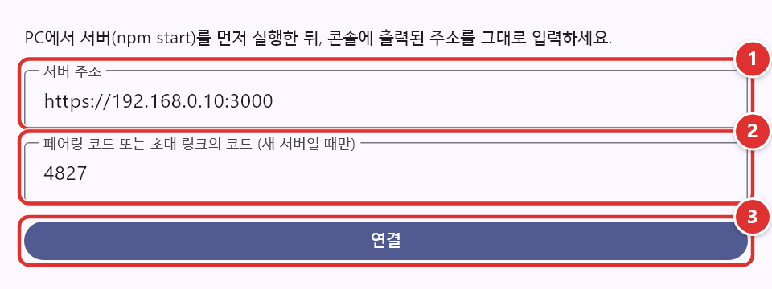
서버 주소에 관리자가 알려 준 주소를 넣습니다. 예:
https://192.168.0.10:3000칸에 이미 주소가 적혀 있어도, 관리자가 알려 준 주소와 다르면 지우고 새로 입력하세요.코드 칸에는 초대 페이지에 적힌 코드(또는 관리자가 알려 준 4자리 코드)를 넣습니다. 이 서버에 처음 연결할 때만 필요합니다.
연결을 누릅니다. 연결되면 로그인 화면으로 바뀝니다.
초대 링크를 받았다면
관리자나 팀 소유자가 메신저나 문자로 초대 링크를 보내 주면, 링크 하나로 설치부터 서버 연결까지 할 수 있습니다. 링크를 열면 브라우저에 TangoTalk 초대 안내 페이지가 뜹니다.
받은 링크를 엽니다. 받은 글에 주소가 두 줄이라면, 회사 와이파이에 있을 때는 사내 와이파이에서: 줄을, 밖(LTE/5G)에 있을 때는 사내 와이파이 밖(LTE/5G)에서: 줄을 엽니다.
앱이 아직 없다면 Windows용 다운로드 또는 Android용 다운로드를 눌러 설치합니다. 앱이 이미 있다면 잠시 뒤 앱이 저절로 열립니다. 아이폰이라면 설치하지 않고, 다운로드 버튼 아래 아이폰은 앱 대신 웹 앱을 씁니다 상자의 주소를 엽니다(아이폰에서는 웹 앱으로).
설치가 끝나면 안내 페이지를 새로고침하거나 TangoTalk 열기를 누릅니다. 브라우저가 앱을 열지 물으면 열기를 누릅니다.
앱에 서버 주소 변경 창(처음 설치했다면 서버 연결 화면)이 뜨고, 주소와 코드가 이미 채워져 있습니다. 연결만 누른 뒤 회원가입하거나 로그인하세요.
아이폰에서는 웹 앱으로
아이폰용 앱은 따로 없습니다. 대신 관리자가 웹 앱 주소(https://로 시작하는 주소, 예: https://tango.iptime.org)를
준비해 두었다면 아이폰의 Safari로 열어 PC · 안드로이드와 같은 계정으로 씁니다. 서버 연결이나 코드 입력은 필요 없습니다.
주소는 초대 안내 페이지의 다운로드 버튼 아래 아이폰은 앱 대신 웹 앱을 씁니다 상자(복사해 받은 초대 글이라면 끝부분의 아이폰 안내 줄)에 있고,
없으면 관리자에게 물어보세요.
Safari에서 웹 앱 주소를 엽니다. 계정이 없다면 회사 와이파이에서 회원가입합니다(아래 주의).
Safari 아래쪽의 공유 단추(네모에서 화살표가 나온 모양)를 누르고 홈 화면에 추가를 누릅니다. 공유 단추가 보이지 않으면 아래쪽의 ⋯ 단추를 먼저 누릅니다.
홈 화면에 생긴 TangoTalk 아이콘으로 열고 로그인합니다. 앞으로도 이 아이콘으로 여세요.
화면 위쪽에 뜨는 알림 켜기를 누르고, 알림을 허용할지 물으면 허용을 누릅니다. 안내를 닫았다면 ☰ › 환경설정 › 시스템 설정의 알림에서 알림 켜기를 누릅니다.
로그인

아이디를 입력합니다. 대문자 · 소문자는 가리지 않습니다(대소문자만 다른 아이디가 따로 있는 예전 계정이면 가입한 그대로 입력하세요).
비밀번호를 입력합니다.
로그인 상태 유지에 체크해 두면 다음에 앱을 켤 때 로그인하지 않아도 됩니다. 아이디 기억하기에 체크하면 아이디 칸이 미리 채워집니다.
로그인을 누릅니다. 비밀번호 칸에서 Enter를 눌러도 됩니다.
회원가입
계정이 없다면 로그인 화면 아래의 계정이 없으신가요? 회원가입(위 그림의 5)을 누릅니다. 아래 순서대로 채우고 가입합니다.

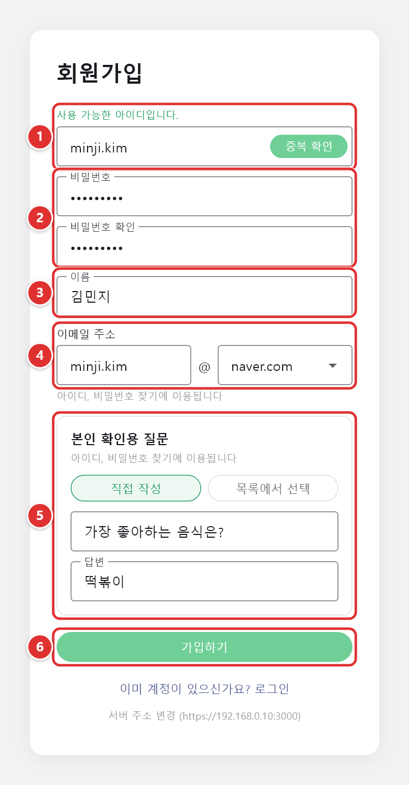
아이디를 쓰고 중복 확인을 누릅니다. 아이디는 영문 · 숫자와 . _ -만 써서 4~20자로 정합니다(한글 · 띄어쓰기는 쓸 수 없습니다). 대문자 · 소문자만 다른 아이디도 이미 있는 아이디로 봅니다. 사용 가능한 아이디입니다.가 보이면 됩니다.
비밀번호를 두 번 똑같이 입력합니다. 문자와 숫자 8~20자이고, 특수문자도 쓸 수 있습니다.
동료에게 보일 이름을 입력합니다.
이메일 주소를 입력합니다. @ 뒤는 목록에서 고르거나 직접 입력을 골라 씁니다.
본인 확인용 질문을 정하고 답을 적습니다. 목록에서 선택으로 고르거나 직접 작성으로 질문을 직접 만들 수 있습니다.
가입하기를 누릅니다.
팀 고르기
로그인하면 내가 속한 팀 리스트가 나옵니다. 팀은 회사 안의 작은 공간이고, 대화방·검색·파일이 팀마다 따로 있습니다.

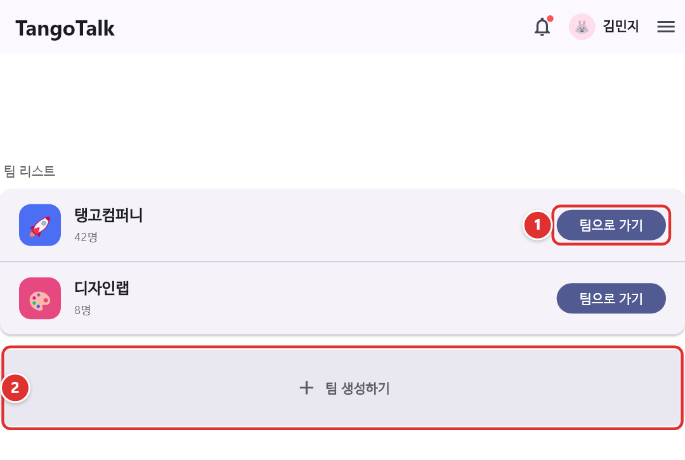
들어갈 팀의 팀으로 가기를 누릅니다. 그 팀의 대화 화면이 열립니다.
새 팀이 필요하면 팀 생성하기를 누릅니다. 만든 사람이 그 팀의 팀 소유자가 됩니다. (서버 설정에 따라 팀을 만들 수 없는 등급도 있습니다. 그때는 안내 문구가 나옵니다.)
2화면 둘러보기
한눈에 보기

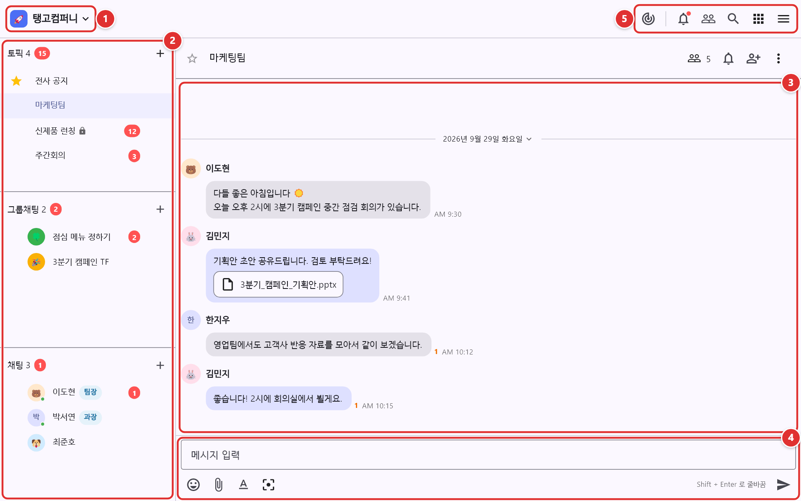
| 번호 | 이름 | 하는 일 |
|---|---|---|
| 1 | 팀 이름 | 지금 보고 있는 팀입니다. 누르면 다른 팀으로 옮길 수 있습니다. |
| 2 | 대화방 목록 | 토픽, 그룹채팅, 채팅(1:1) 세 칸으로 나뉩니다. 방 이름을 누르면 오른쪽에 대화가 열립니다. |
| 3 | 대화 내용 | 연 대화방의 메시지가 보입니다. 가장 최근 메시지가 맨 아래에 있습니다. |
| 4 | 입력칸 | 메시지를 쓰고 보내는 곳입니다. 아래 줄 왼쪽에 이모티콘 · 멘션(@) · 파일 · 투표 · 서식 · 캡처 단추가, 오른쪽 끝에 메시지 예약(시계 붙은 종이비행기) · 보내기 단추가 있습니다. 방 종류와 창 폭에 따라 보이는 단추가 조금 다릅니다. |
| 5 | 오른쪽 위 아이콘 | 알림 센터, 팀 멤버, 검색, 메뉴, 내 메뉴(☰)입니다. 아래에서 하나씩 설명합니다. |
대화방의 종류
| 종류 | 설명 | 이럴 때 좋아요 |
|---|---|---|
| 토픽 | 주제별 대화방입니다. 공개 토픽은 정회원이면 누구나 참여 가능한 토픽 보기에서 찾아 들어올 수 있습니다(저절로 들어가지는 않습니다). 비공개 토픽은 초대받은 사람만 볼 수 있고, 목록에서 이름 옆에 회색 자물쇠(🔒)가 붙습니다. 대화를 주고받는 챗 뷰와 게시글을 올리는 보드 뷰가 있고, 공지를 올릴 수 있습니다. | 부서 방, 전사 공지, 프로젝트별 방, 자료 게시판 |
| 그룹채팅 | 여러 사람을 골라 만드는 대화방입니다. | 몇 명끼리 잠깐 의논할 때 |
| 채팅 | 한 사람과 나누는 1:1 대화입니다. | 개인적인 업무 연락 |
| 🔒 비밀 대화 | 이름이 초록색이고 자물쇠가 붙은 1:1 대화입니다. 아래에서 설명합니다. | 민감한 내용을 주고받을 때 |
각 칸 안에서는 즐겨찾기(★)한 방이 맨 위에 오고, 그다음은 최근에 대화가 오간 순서로 정렬됩니다. 토픽 칸은 내가 만든 토픽 폴더 → 폴더 밖 토픽 → 맨 아래 보관된 토픽 순서로 묶여 보입니다.
오른쪽 위 아이콘

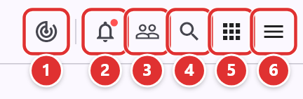
| 번호 | 이름 | 누르면 |
|---|---|---|
| 1 | 알림 센터 | 안 읽은 메시지·멘션·공지·프로젝트 알림을 모아 보여 줍니다(알림 센터). 빨간 점은 새 알림이 있다는 뜻입니다. |
| 2 | 팀 멤버 | 오른쪽에 팀원 목록이 열립니다. 이름을 누르면 프로필 카드가 뜹니다. |
| 3 | 검색 | 메시지를 검색합니다. |
| 4 | 메뉴 | 점 아홉 개 모양입니다. 누르면 기능 단추가 세 묶음으로 펼쳐집니다 — 생성(메시지 예약 · 할 일 · 투표), 리스트(파일 · 즐겨찾기 · 북마크 · 링크 · 내가 쓴 글 · 앨범), 툴(캘린더 · 프로젝트 · 문의함). 프로젝트는 업무를 관리하는 프로젝트 창을 엽니다(정회원 이상, 프로젝트 이용법). |
| 5 | 내 메뉴(☰) | 내 프로필, 환경설정, 도움말, 로그아웃이 있습니다. |
내 메뉴(☰)

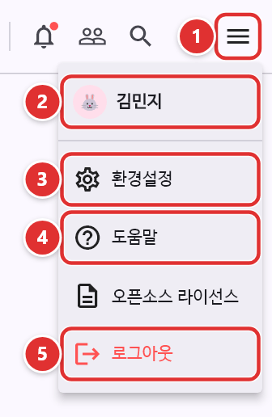
오른쪽 위 끝의 ☰를 누르면 메뉴가 열립니다.
맨 위 내 이름을 누르면 내 프로필이 열립니다.
환경설정: 알림 미리보기, 보내기 키, 화면 테마, 파일 다운로드 등을 바꿉니다(환경설정).
도움말: 지금 보고 있는 이 도움말을 엽니다. 바로 아래 오픈소스 라이선스는 앱에 쓰인 공개 소프트웨어의 사용 허가 내용입니다.
로그아웃: 로그인 화면으로 나갑니다.
초대 링크 보내기 팀 소유자 관리자
새로 올 동료에게 설치 파일과 서버 연결을 한 번에 건네는 링크입니다. 받는 사람이 하는 일은 초대 링크를 받았다면에 있습니다. 초대 링크 생성 메뉴는 팀 소유자, 관리자 등급, 서버 운영자에게만 보입니다.

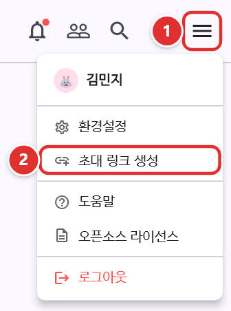
오른쪽 위 끝의 ☰를 누릅니다.
초대 링크 생성을 누르면 초대 링크 창이 열립니다. 지금까지 만든 링크도 여기에 모여 있습니다.

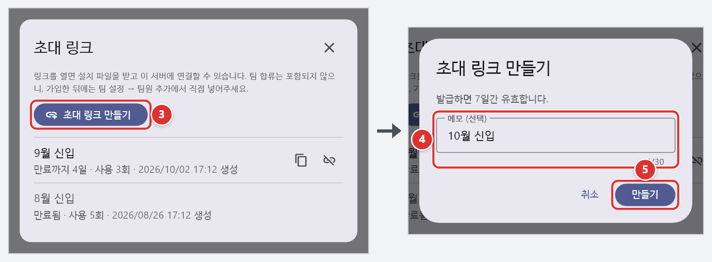
초대 링크 만들기를 누릅니다.
가입 인원(1 · 5 · 10 · 30 · 100명, 처음엔 1명)을 고르고, 메모에 누구를 위한 링크인지 적어 둡니다(선택, 예: 10월 신입). 메모는 목록에서 링크를 구분할 때 씁니다. 정한 인원이 다 가입하면 사내 와이파이 밖에서는 이 링크로 더 가입할 수 없습니다.
만들기를 누릅니다. 링크는 만든 날부터 7일 동안 쓸 수 있습니다.

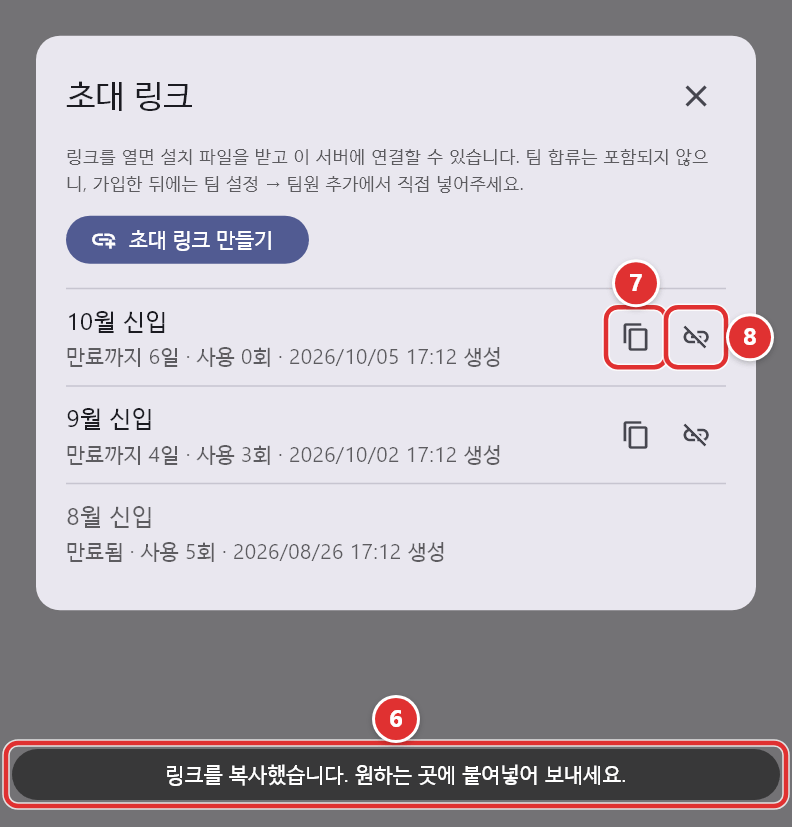
새 링크가 목록 맨 위에 생기고, 링크가 바로 복사되어 화면 아래에 링크를 복사했습니다. 원하는 곳에 붙여넣어 보내세요.가 잠깐 뜹니다. 메신저·문자·메일에 붙여넣어(Ctrl + V) 보내세요.
나중에 다시 보내려면 그 링크 줄의 링크 복사(겹친 네모 모양)를 누릅니다.
잘못 보냈거나 더 쓰지 않을 링크는 링크 취소(끊어진 고리 모양)를 누르고 링크 취소하기를 누릅니다. 이미 보낸 링크로는 더 이상 설치·연결할 수 없게 됩니다.
목록의 각 줄 아래에는 만료까지 며칠(또는 인원 마감 · 만료됨 · 취소됨), 가입한 인원(예: 가입 2/5명), 만든 날짜가 나옵니다. 인원이 다 찬 링크는 흐리게 보이고 복사 버튼이 없지만, 이미 가입한 사람이 만료 전까지 다른 기기를 연결하는 데 쓸 수 있어 취소 버튼은 남습니다. 만료되거나 취소된 링크는 복사·취소 버튼이 모두 없습니다. 링크를 만든 사람이 더 이상 초대 링크를 만들 수 없게 되면(등급 변경 · 정지 등) 그 사람이 만든 링크도 함께 쓸 수 없게 됩니다.
팀 초대 링크 — 가입하면 바로 이 팀으로
팀 초대 링크는 팀 리스트 화면에서 만듭니다. 팀 카드의 설정을 누르면 열리는 팀 설정 창의 팀 정보 탭에 있습니다. 그 팀의 소유자·관리자이고, 서버 설정에서 팀 초대 링크를 만들 수 있게 허용된 등급일 때만 보입니다.

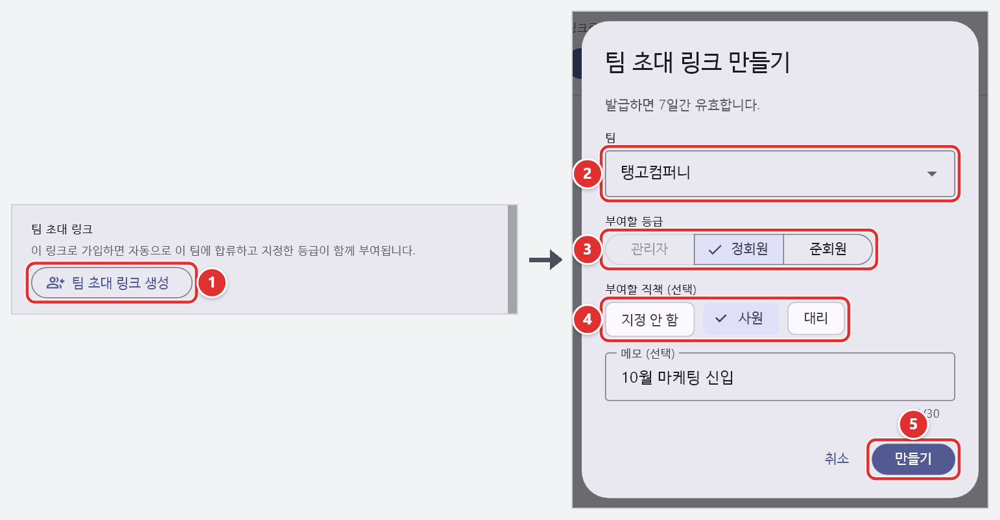
팀 초대 링크 생성을 누르면 팀 초대 링크 창이 열립니다. 여기서 팀 초대 링크 만들기를 누릅니다.
팀: 가입한 사람이 들어갈 팀입니다. 설정을 연 팀이 미리 골라져 있습니다.
부여할 등급: 가입하자마자 받을 등급입니다. 내 등급보다 높은 등급은 고를 수 없어 흐리게 보입니다.
부여할 직책(선택): 내 직책과 같거나 낮은 직책만 고를 수 있습니다. 가입 인원(처음엔 1명 — 관리자 등급을 주는 링크는 늘 1명)을 고르고, 필요하면 메모도 적습니다.
만들기를 누릅니다. 초대 링크와 똑같이 링크가 바로 복사되고 7일 동안 쓸 수 있습니다. 복사·취소 방법도 같습니다.
팀원 추가 — 이미 가입한 사람을 팀에 넣기
회원가입만 한 사람(초대 링크로 가입한 사람 등)은 팀 소유자 · 관리자가 팀에 넣어 줍니다. 팀 리스트에서 팀 카드의 설정을 눌러 팀 설정 창을 열고, 멤버 탭의 추가를 누르면 팀원 추가 창이 열립니다.
- 넣을 사람을 눌러 고르고(여러 명 가능) 추가하기를 누릅니다. 위쪽 칸에 이름이나 아이디를 쓰면 목록이 좁혀집니다. 정지되었거나 탈퇴한 계정은 목록에 나오지 않습니다.
- 관리자 등급과 서버 운영자에게는 아직 이 팀에 없는 서버의 모든 회원이 이름순으로 나옵니다.
- 관리자 등급이 아닌 팀 소유자(팀을 직접 만든 정회원 등)에게는 팀을 같이 쓰는 사람만 나옵니다. 다른 사람은 그 사람의 아이디를 받아 위쪽 칸에 정확히(대소문자까지) 쓰고 아이디로 찾기(또는 Enter)를 누르세요. 찾은 사람은 목록 맨 위에 골라진 채로 나옵니다. 없는 아이디이거나 이미 팀원이면 추가할 수 있는 사람이 없습니다라고 나옵니다. 아이디로 찾기는 10분에 30번까지입니다.
다른 팀으로 옮기기

왼쪽 위의 팀 이름을 누릅니다.
옮겨 갈 팀을 누르면 바로 그 팀의 대화방 목록으로 바뀝니다.
팀 리스트를 누르면 처음의 팀 리스트 화면으로 돌아갑니다.
3대화 시작하기
대화방 목록의 각 칸 제목 옆 + 버튼으로 새 대화를 만듭니다. 준회원에게는 그룹채팅·채팅 칸의 + 버튼이 보이지 않고, 토픽 칸의 + 메뉴에는 폴더 생성만 있습니다.
1:1 대화

목록의 채팅 칸 옆 +(채팅 시작하기)를 누릅니다. 채팅 시작하기 창이 뜹니다.
왼쪽 팀 멤버에서 대화할 사람 한 명을 눌러 체크합니다. 위쪽 멤버 검색 · 직책으로 좁힐 수 있고, 고른 사람은 오른쪽(창이 좁으면 아래) 선택된 멤버에 모입니다. 다시 누르거나 ✕를 누르면 빠집니다.
채팅 시작을 누르면 1:1 대화방이 열립니다. 전에 대화한 적이 있으면 그 방이 다시 열립니다. 두 명 이상 고르고 누르면 그 사람들과의 그룹채팅이 바로 만들어집니다(이름은 멤버 이름으로 보입니다).
한 명만 골랐을 때는 초록색 비밀 대화 시작도 누를 수 있습니다(비밀 대화).
목록 맨 위 나와의 대화는 나만 보는 메모 공간입니다. 누르면 바로 열립니다(채팅 칸 맨 위에도 늘 있습니다).
그룹 대화
이름 · 아이콘 · 설명을 정해서 만들려면 그룹채팅 칸의 +를 씁니다. (채팅 시작하기 창에서 두 명 이상 골라도 그룹채팅이 만들어지지만, 이때는 이름 · 아이콘이 기본값입니다.)

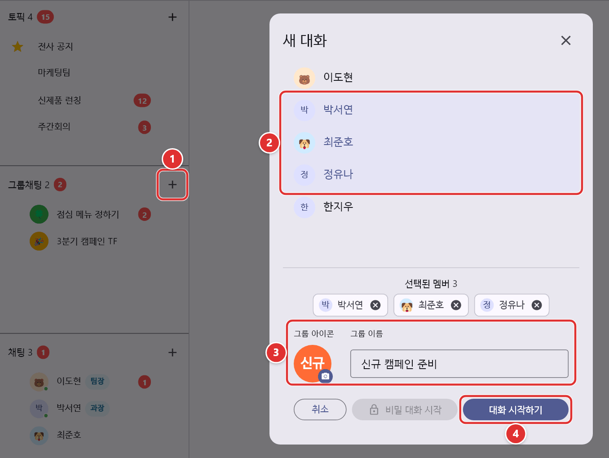
그룹채팅 칸 옆 +(새 그룹채팅)를 누릅니다. 새 그룹채팅 만들기 창이 뜹니다.
그룹 아이콘: 편집(또는 아이콘의 카메라 표시)을 눌러 이모지 · 색 · 사진을 고릅니다. 그대로 두면 그룹 이름의 앞 두 글자로, 이름도 없으면 멤버 사진으로 보입니다.
그룹 이름과 설명은 쓰지 않아도 됩니다. 이름을 비워 두면 멤버 이름이 방 이름이 됩니다.
멤버: 멤버 선택을 누르면 멤버 초대하기와 같은 모양의 창이 열립니다. 함께할 사람을 한 명 이상 체크하고 확인을 누르면 이 칸에 모입니다. 이름 옆 ✕로 뺍니다.
생성을 누르면 그룹채팅이 열립니다.
나중에 사람을 더 부르려면 대화방 위쪽의 멤버 초대(사람 모양에 +) 버튼을 누릅니다 (멤버 초대하기).
토픽 만들기
토픽은 주제별 대화방입니다. 새 토픽을 만들면 만든 사람만 들어 있고, 만든 사람이 그 토픽의 토픽 관리자가 됩니다(토픽 관리하기). 공개 토픽이라도 팀원이 저절로 들어오지 않으므로, 만든 뒤 바로 열리는 멤버 초대하기 창에서 함께할 사람을 고르세요.

토픽 칸 제목 옆 +를 누릅니다.
새로운 토픽 생성하기를 누릅니다. (참여 가능한 토픽 보기는 아래, 폴더 생성은 토픽 폴더에서 설명합니다. 여러 토픽/그룹채팅에 초대는 여러 사람을 고른 뒤 내가 참여 중인 토픽 · 그룹채팅 여러 곳에 한 번에 초대합니다.)

이름: 토픽 이름을 씁니다(60자까지). 칸 아래에 글자 수가 보입니다.
보기 방식: 메시지를 주고받는 챗 뷰와, 제목이 있는 게시글을 올리는 보드 뷰(보드 뷰 토픽) 중에서 고릅니다. 만든 뒤에는 바꿀 수 없습니다.
공개 여부: 공개는 정회원이면 누구나 찾아서 참여할 수 있고, 비공개는 초대받은 멤버만 참여할 수 있습니다. 비공개 토픽은 목록에서 이름 옆에 회색 자물쇠가 붙습니다.
토픽 설명(선택): 어떤 이야기를 나누는 토픽인지 적습니다(300자까지).

폴더 선택(선택): 내 토픽 폴더를 고르면 새 토픽이 그 폴더에 바로 들어갑니다.
필요하면 스위치를 켭니다. 정회원 자동 초대를 켜면 앞으로 팀에 새로 들어오는 정회원이 이 토픽에 자동으로 초대됩니다(공개 토픽만 — 비공개를 고르면 꺼지고 누를 수 없습니다). 읽기 전용 설정을 켜면 토픽 관리자만 글을 쓰고, 다른 멤버는 읽고 댓글만 달 수 있습니다(읽기 전용 토픽).
생성을 누르면 새 토픽이 열리고, 곧바로 멤버 초대하기 창이 뜹니다(다음 절).
멤버 초대하기
토픽을 만든 직후에는 이 창이 저절로 열립니다. 이미 있는 토픽이나 그룹채팅에 사람을 더 부를 때는 대화방 위쪽의 멤버 초대(사람 모양에 +) 버튼을 누릅니다. 정회원 이상만 초대할 수 있습니다 (팀 설정에 따라 관리자만 초대할 수 있기도 합니다).

멤버 검색 칸에 이름(또는 아이디)을 쓰면 목록이 좁혀집니다.
직책으로도 좁힐 수 있습니다(전체, 직책별, 직책 없음).
검색 조건 초기화를 누르면 검색어와 직책이 처음 상태로 돌아갑니다.
모든 멤버 선택하기: 지금 목록에 보이는 사람을 한꺼번에 고르거나 풉니다.
왼쪽 팀 멤버에서 초대할 사람을 눌러 체크합니다. 이미 이 방에 있는 사람은 목록에 나오지 않습니다.
고른 사람은 오른쪽 선택된 멤버에 고른 순서대로 모입니다. ✕를 누르면 뺍니다.
초대하기 (N)을 누르면 초대가 끝납니다. 닫기를 누르면 아무도 초대하지 않고 닫힙니다.
참여 가능한 토픽 보기
공개 토픽은 초대를 받지 않아도 직접 찾아 들어갈 수 있습니다. 토픽 칸 옆 + › 참여 가능한 토픽 보기를 누르세요.

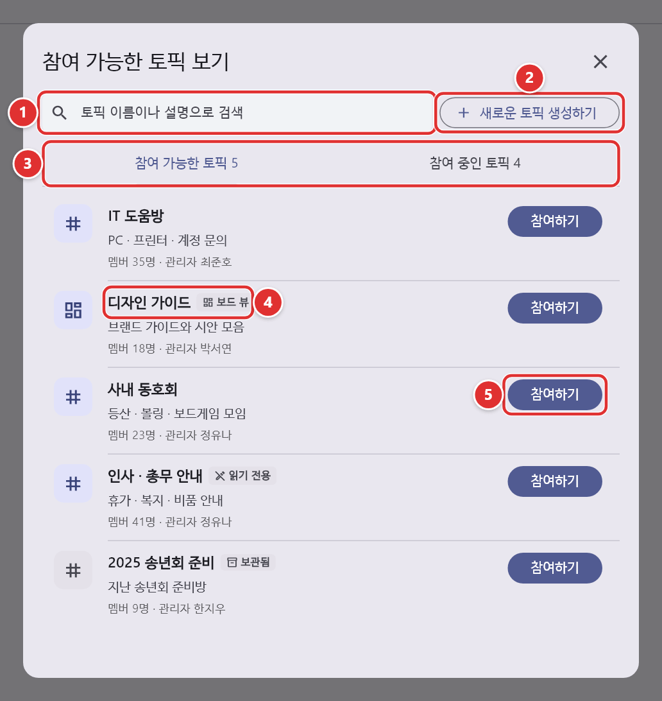
토픽 이름이나 설명으로 검색합니다.
찾는 토픽이 없으면 여기서 바로 새로운 토픽 생성하기를 누를 수 있습니다(토픽을 만들 수 있는 사람에게만 보입니다).
참여 가능한 토픽 탭에는 아직 들어가지 않은 공개 토픽이, 참여 중인 토픽 탭에는 내가 들어가 있는 토픽(비공개 포함)이 있습니다. 탭 이름 옆 숫자는 토픽 수입니다.
이름 옆에는 보드 뷰, 읽기 전용, 보관됨, 회색 자물쇠(비공개) 같은 표시가 붙고, 아래 줄에 멤버 수와 토픽 관리자가 보입니다.
참여하기를 누르면 바로 들어가서 그 토픽이 열립니다. 참여하면 이전 메시지도 볼 수 있습니다. 참여 중인 토픽에는 열기 버튼이 있습니다.
비밀 대화
비밀 대화는 내용이 암호화되어 서버도 볼 수 없는 1:1 대화입니다. 목록에 초록색 이름과 🔒 자물쇠로 표시됩니다.
채팅 시작하기 창에서 한 사람만 고르고 초록색 🔒 비밀 대화 시작을 누릅니다 (1:1 대화 그림의 4). 프로필 카드의 비밀 대화 시작이나, PC 목록에서 1:1 방을 오른쪽 클릭한 메뉴의 비밀대화 시작하기로도 시작할 수 있습니다.
상대방에게 비밀 대화 요청 창이 뜨고, 상대가 수락하면 대화할 수 있습니다. 대화가 시작되면 상대와 보안 코드를 한 번 비교해 두세요.
비밀 대화 보안 코드 확인
비밀 대화를 맺을 때 이 기기는 상대 기기의 키(그 기기를 알아보는 보안 키)를 처음 한 번 기억해 둡니다. 그 뒤로는 그 기기와 대화할 때마다(대화를 끝내고 새로 시작해도) 기억해 둔 키로만 확인해서, 누군가 서버를 거쳐 다른 키를 끼워 넣으려 하면 앱이 알아채고 대화를 멈춥니다. 다만 처음 기억한 키가 정말 상대의 것인지는 두 사람이 보안 코드를 비교해야 알 수 있습니다.
비밀 대화방 위쪽 ⋮(더보기) › 보안 코드 확인을 누릅니다. 상대가 요청을 수락한 뒤부터 코드가 나옵니다.
OOO 님과의 보안 코드 아래에 다섯 자리 숫자 12묶음(60자리)이 나옵니다. 상대도 자기 기기에서 같은 창을 엽니다.
직접 만나거나 전화로 두 화면의 숫자를 비교합니다. 이 메신저로 숫자를 주고받으면 가로챈 쪽이 그 숫자도 바꿀 수 있어 확인이 되지 않습니다.
모두 같으면 비교했고 같습니다 — 확인함으로 표시를 누릅니다. ⋮ 메뉴의 보안 코드 확인 옆에 초록 방패와 확인함이 붙습니다. 이 표시는 이 기기에만 남고, 같은 상대 기기와 새로 시작한 비밀 대화에도 그대로 이어집니다. 잘못 눌렀으면 확인 표시 지우기로 지웁니다.
숫자가 모두 같으면 서버를 포함해 그 누구도 이 대화를 몰래 볼 수 없습니다. 하나라도 다르면 코드가 다릅니다 › 대화 멈추고 키 지우기를 누르세요. 기억해 둔 상대 기기의 키를 지우고 그 기기와의 비밀 대화를 모두 멈춥니다. 상대도 자기 화면에서 똑같이 누른 뒤, 대화를 끝내고 새 비밀 대화를 시작해 보안 코드를 다시 비교하세요.
대화방 위에 뜨는 보안 안내
필요할 때만 비밀 대화방 맨 위에 한 줄로 나옵니다. 대화가 멈췄거나 상대의 기기가 바뀌었을 때는 다른 화면을 보고 있어도 화면 아래에 잠깐 안내가 뜹니다.
| 안내 | 뜻과 할 일 |
|---|---|
| 빨강 상대 기기의 보안 확인에 실패해 이 비밀 대화를 멈췄습니다. | 상대 기기의 키가 기억해 둔 것과 다르거나, 이 대화의 상대가 아닌 기기가 끼어들었거나, 새 방식으로 대화하던 상대 기기와 예전 방식으로 대화를 맺게 하려 했습니다. 서버나 중간의 누군가가 가로채려 했을 수 있어 더는 메시지를 주고받지 않습니다(새로 온 메시지는 이 메시지는 복호화할 수 없습니다로 보이고, 이미 보이던 메시지는 그대로입니다). 보안 코드가 달라 키를 지운 대화도 이렇게 멈춥니다. 멈춘 대화는 다시 풀 수 없으니 비밀 대화 끝내기로 끝내고 새로 시작한 뒤 보안 코드를 비교하세요. |
| 노랑 상대의 기기가 바뀌었습니다. | 보안 코드를 확인해 둔 상대가 확인하지 않은 다른 기기(새 PC나 휴대폰 등)로 대화를 맺었습니다. 보안 코드는 기기마다 달라서 보안 코드 확인을 눌러 다시 비교하세요. 확인하거나 ✕로 닫으면 사라집니다. 비밀 대화 요청 창에도 같은 안내가 나옵니다. |
| 회색 상대가 예전 버전의 앱을 쓰고 있어… | 보안 확인이 일부만 이뤄집니다. 상대에게 앱을 업데이트해 달라고 알려 주세요. ✕로 닫을 수 있습니다. |
| 회색 이 비밀 대화는 예전 방식으로 맺어져 있습니다… | 앱을 업데이트하기 전에 시작한 대화입니다. 그대로 써도 되지만, 두 사람 모두 최신 앱이라면 대화를 끝내고 새로 시작하세요 — 메시지가 더 안정적으로 오가고 더 안전한 새 방식으로 바뀝니다. 대화를 끝내면 그 대화의 메시지는 지워집니다. ✕로 닫을 수 있습니다. |
4메시지 보내기
글 보내기와 읽음 표시

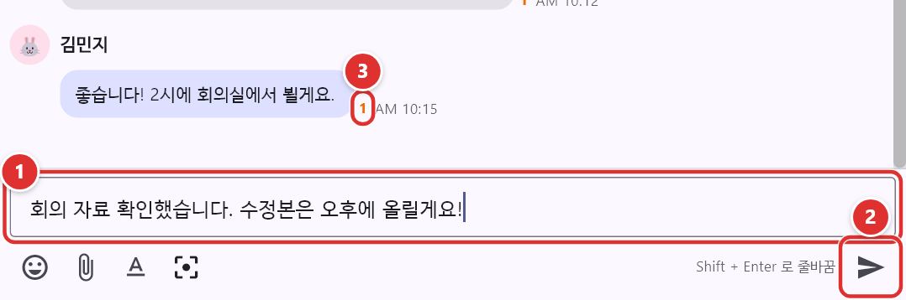
아래쪽 메시지 입력 칸을 누르고 글을 씁니다.
Enter를 누르거나 보내기(종이비행기 모양)를 누르면 보내집니다. 줄을 바꾸려면 Shift + Enter를 누릅니다. PC 반대로(Shift + Enter로 보내고 Enter로 줄바꿈) 쓰고 싶으면 환경설정 › 메신저 설정의 메시지 전송 옵션 설정을 바꾸세요. 입력칸 아래 오른쪽의 작은 안내(Shift + Enter 로 줄바꿈)가 지금 설정을 알려 줍니다(자리가 좁으면 숨겨집니다). 보내기 바로 왼쪽의 시계 붙은 종이비행기는 정한 시각에 보내는 메시지 예약입니다.
내 말풍선 옆 주황색 숫자는 아직 읽지 않은 사람 수입니다. 모두 읽으면 숫자가 사라집니다.
멘션(@)으로 사람 부르기
토픽이나 그룹채팅에서 특정 사람에게 꼭 알려야 할 때는 멘션을 씁니다. 멘션된 사람은 대화방 알림을 꺼 두었어도 알림을 받고(@all 제외), 알림 센터의 멘션 탭에 따로 모입니다.

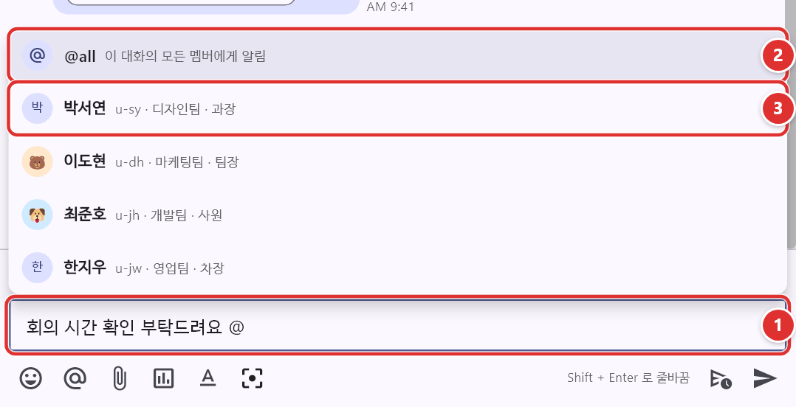
입력칸에 @를 칩니다. 입력칸 아래 멘션(@ 모양) 버튼을 눌러도 됩니다. @는 글 맨 앞이나 띄어 쓴 바로 뒤에 쳐야 목록이 뜹니다. @ 뒤에 이름이나 아이디 몇 글자를 치면 목록이 좁혀집니다.
@all을 고르면 이 대화방의 모든 멤버에게 알림이 갑니다. @ 뒤에 all, 전체, 모두를 쳐도 맨 위에 나옵니다.
부를 사람을 누릅니다. 키보드로는 ↑ / ↓로 고르고 Enter(또는 Tab)로 넣습니다. Esc를 누르면 목록이 닫힙니다. 고른 이름은 입력칸에 @이름으로 들어가고, 그대로 보내면 됩니다.

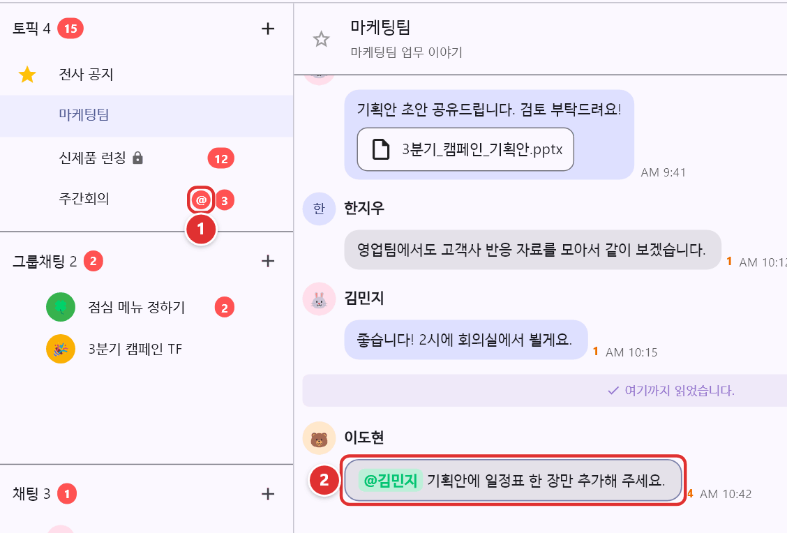
- 1 아직 읽지 않은 멘션이 있는 방은 목록의 안 읽은 숫자 옆에 빨간 @ 표시가 붙습니다.
- 2 나(또는 @all로 모두)를 멘션한 말풍선은 테두리가 강조되고, 멘션된 이름은 초록 글씨로 보입니다. 이름을 누르면 그 사람의 프로필 카드가 뜹니다.
파일 · 사진 보내기

파일 보내기(클립 모양)를 누르고 보낼 파일을 고릅니다. 여러 개를 한꺼번에 골라도 됩니다.
고른 파일이 입력칸 위에 올라오며 바로 전송 준비(업로드)를 시작합니다. 사진은 작은 미리보기로 보입니다. 잘못 골랐으면 오른쪽 위 ✕를 누릅니다. 설명을 같이 보내려면 입력칸에 글을 쓰면 됩니다.
파일 아래 용량만 보이면(준비 끝) 보내기를 누릅니다. 사진 여러 장은 한 말풍선에 모아 보내집니다.
표 · 엑셀 붙여 넣기 PC
엑셀이나 웹 페이지에서 표를 복사해 입력칸에 Ctrl + V로 붙여 넣으면, 칸이 흐트러진 글자 대신 표 그림으로 바뀌어 보낼 준비가 됩니다.

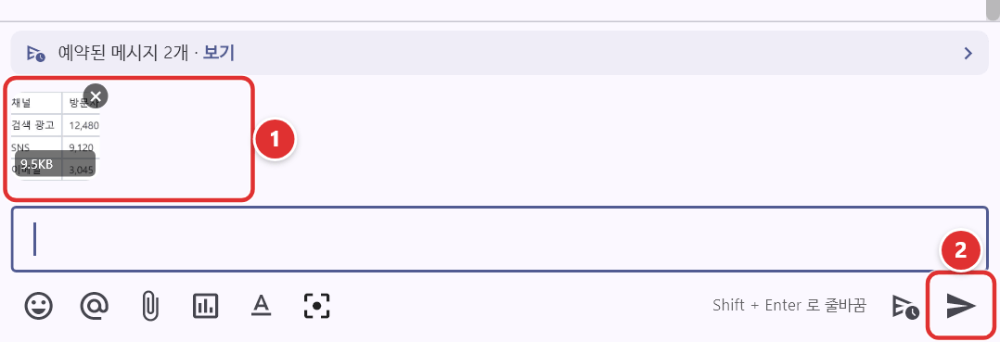
엑셀(또는 웹 페이지의 표)에서 칸을 골라 복사한 뒤, 입력칸에서 Ctrl + V를 누릅니다. 표가 그림 파일로 바뀌어 입력칸 위에 올라옵니다(파일 · 사진 보내기와 같은 모양). 잘못 올렸으면 ✕로 뺍니다.
보내기를 누르면 표 그림이 보내집니다.
이모티콘 보내기

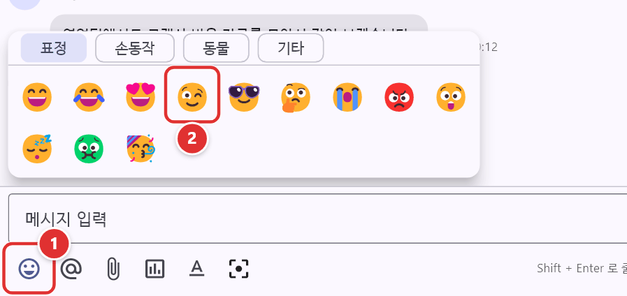
입력칸 아래 이모티콘(웃는 얼굴)을 누릅니다. 위쪽의 표정 · 손동작 · 동물 · 기타로 종류를 바꿀 수 있습니다. 한 번이라도 보낸 이모티콘은 맨 앞 자주 쓰는 탭에 많이 쓴 순서로 모이고, 창을 열면 이 탭부터 보입니다(그 기기에만 기억됨).
보낼 이모티콘을 누릅니다.

고른 이모티콘이 미리 보입니다. 마음이 바뀌면 ✕를 누릅니다.
Enter 또는 보내기를 누르면 큰 이모티콘이 보내집니다. 글을 함께 쓰면 이모티콘이 먼저, 글이 그다음 메시지로 보내집니다.
그림 이모티콘 세트
서버 관리자가 올려 둔 그림 이모티콘 세트가 있으면 이모티콘 창 맨 앞에 세트 이름의 탭으로 나옵니다. 보내는 방법은 이모티콘 보내기와 같습니다.

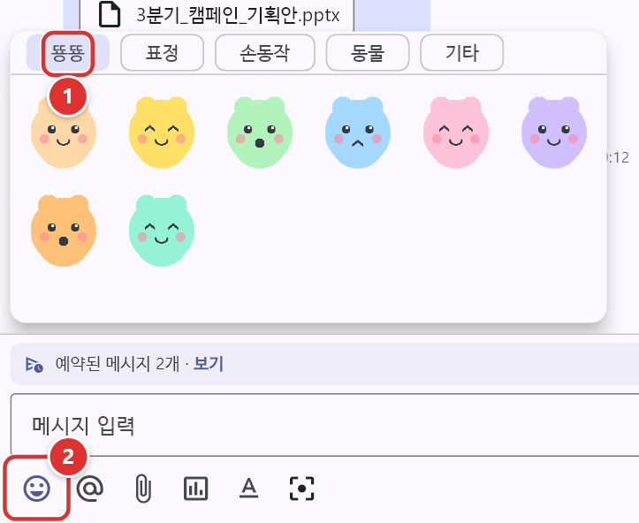
- 2 이모티콘(웃는 얼굴)을 누르고, 1 위쪽 탭에서 세트를 고른 뒤 그림을 누릅니다.
- 탭을 꾹 누른 채 끌면 탭 순서를 바꿀 수 있습니다. 바꾼 순서는 이 PC에 저장됩니다.
- 세트가 많아 탭이 한 줄에 다 안 들어가면 줄 양끝에 ‹ › 버튼이 생깁니다. 눌러서 넘겨 봅니다.
캐릭터 세트는 프로필 사진으로도 고를 수 있습니다 — 캐릭터로 프로필 사진 꾸미기.
글자 꾸미기

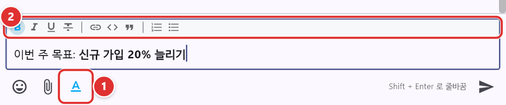
입력칸 아래 서식 도구(밑줄 그은 A)를 누르면 입력칸 위에 도구 줄이 펼쳐집니다. 다시 누르면 접힙니다.
꾸밀 글자를 마우스로 끌어 고른 뒤 도구를 누릅니다. 왼쪽부터 굵게 · 기울임 · 밑줄 · 취소선, 링크 · 코드 · 인용, 번호 목록 · 글머리 목록입니다.
Ctrl + B(굵게), Ctrl + I(기울임), Ctrl + U(밑줄)도 됩니다. 비밀 대화에서는 글자 꾸미기를 쓸 수 없습니다.
화면 캡처해서 보내기 PC

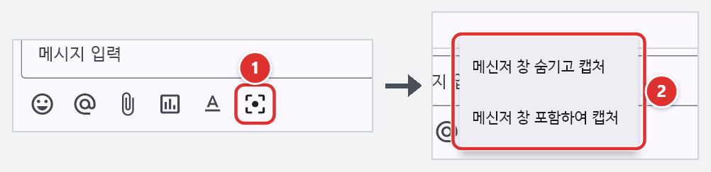
입력칸 아래 화면 캡처(네모 속 점) 버튼을 누릅니다.
메신저 창 숨기고 캡처 또는 메신저 창 포함하여 캡처를 고릅니다. 화면이 캡처 모드로 바뀌면 마우스로 찍을 부분을 끌어서 고릅니다. 나타나는 도구로 도형·글·그림을 그려 넣은 뒤 파일 업로드(대화방에 올리기) 또는 저장을 누릅니다.
메시지 예약해서 보내기
지금 써 둔 메시지를 정한 시각에 저절로 보낼 수 있습니다. 퇴근 뒤에 쓴 공지를 다음 날 아침 9시에 보내는 식입니다.

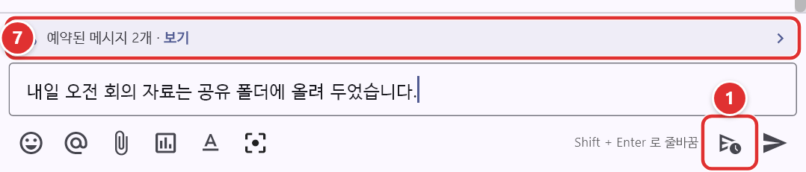
입력칸에 보낼 글을 쓰고(비워 두고 창에서 써도 됩니다) 보내기 바로 왼쪽의 메시지 예약(시계가 달린 종이비행기)을 누릅니다. 입력칸에 올려 둔 파일도 함께 넘어갑니다.
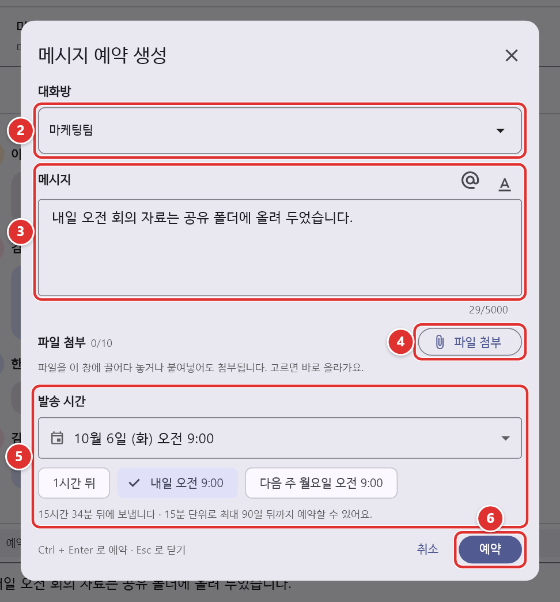
메시지 예약 생성 창 대화방: 보낼 방을 확인합니다. 눌러서 다른 방으로 바꿀 수도 있습니다.
메시지: 보낼 글을 다듬습니다(5,000자까지). 오른쪽 위 @로 멘션을, A로 글자 꾸미기를 할 수 있습니다.
파일 첨부로 파일을 10개까지 붙입니다. 창에 끌어다 놓거나 붙여 넣어도 되고, 고르는 즉시 올라갑니다.
발송 시간: 칸을 눌러 날짜와 시각을 고르거나, 아래 1시간 뒤 · 내일 오전 9:00 · 다음 주 월요일 오전 9:00을 누릅니다. 시각은 15분 단위로, 최대 90일 뒤까지 고를 수 있고, 바로 아래에 몇 시간 뒤에 보내지는지 나옵니다.
예약을 누릅니다(Ctrl + Enter도 됩니다). 쓰던 글은 입력칸에서 비워지고 예약으로 옮겨 갑니다.

예약이 있는 방에는 입력칸 위에 예약된 메시지 N개 · 보기 줄이 생깁니다(맨 위 그림의 7). 누르면 이 방의 예약 목록이 열립니다.
예약한 메시지 보기 · 고치기 · 취소

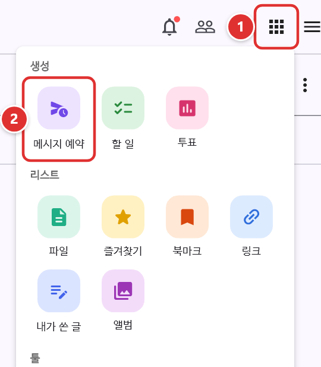
창 오른쪽 위 메뉴(점 아홉 개)를 누릅니다.
생성 묶음의 메시지 예약을 누르면 오른쪽에 내 예약 목록이 열립니다.
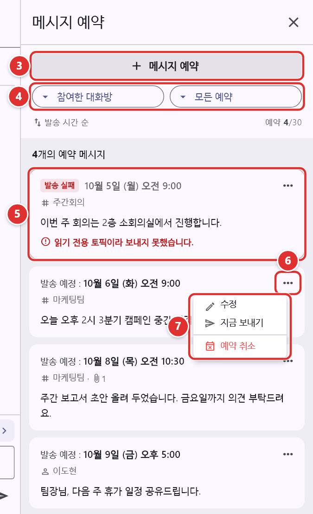
메시지 예약 목록 + 메시지 예약으로 새 예약을 만듭니다(위의 예약 창이 열립니다).
참여한 대화방 · 모든 예약(예약됨 · 발송 실패)으로 거르고, 왼쪽 아래 글자로 발송 시간 순 · 생성 순을 바꿉니다. 오른쪽의 예약 N/30은 지금 쓰고 있는 예약 수입니다.
정한 시각에 보내지 못한 예약은 빨간 발송 실패 표와 까닭(예: 읽기 전용 토픽이 됨)이 함께 남습니다. ⋯ › 수정해서 다시 예약 또는 삭제를 고르세요.
예약 카드 오른쪽 위 ⋯를 누릅니다(카드 자체를 누르면 바로 수정 창이 열립니다).
메뉴에서 수정(내용 · 시각 고치기), 지금 보내기(기다리지 않고 바로 보내기), 예약 취소를 할 수 있습니다. 취소한 예약은 되돌릴 수 없습니다.

예약한 메시지가 보내지면 목록에서 사라지고, 화면 아래에 잠깐 보냈다는 안내가 뜹니다. 보내지 못했을 때도 안내가 뜹니다.
5메시지 활용하기
메시지 메뉴

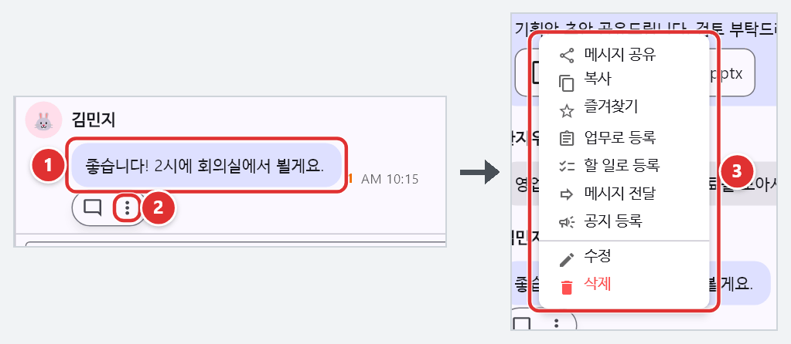
메시지 위에 마우스를 올리면 말풍선 아래에 작은 도구 상자(댓글 · ⋮)가 나타납니다.
⋮(더보기)를 누릅니다.
원하는 항목을 고릅니다.
| 항목 | 하는 일 |
|---|---|
| 메시지 공유 | 다른 대화방을 골라 내 글을 쓰고, 그 아래 이 메시지를 인용해서 보냅니다. 인용에는 원래 보낸 사람의 지금 이름과 원래 메시지 내용이 붙습니다. |
| 복사 | 메시지 글을 복사합니다. |
| 즐겨찾기 | 이 메시지를 즐겨찾기에 모읍니다. 오른쪽 위 메뉴 › 즐겨찾기에서 다시 봅니다. 한 번 더 누르면 즐겨찾기 해제입니다. |
| 업무로 등록 | 이 메시지 내용으로 새 업무 창을 엽니다(정회원 이상). 프로젝트 이용법 참고. |
| 할 일로 등록 | 이 메시지로 대화방 할 일을 만듭니다(글 · 사진 · 파일 메시지). |
| 메시지 전달 | 이 메시지를 그대로 다른 대화방에 보냅니다. 포함을 켜면 원래 보낸 사람과 시각이 같이 표시됩니다. 전달 창에서 내용을 고치면 이 표시는 붙지 않습니다(내용을 고치면 원본 표시는 붙지 않습니다.). |
| 공지 등록 | 토픽의 글 · 사진 메시지에만 보입니다(공지를 쓸 수 있는 사람). 이 메시지를 공지로 올립니다. |
| 수정 · 삭제 | 내 메시지에만 보입니다(고치기와 지우기). |
댓글 달기
특정 메시지에 대한 답은 댓글로 달면 대화가 뒤섞이지 않습니다.

메시지 위에 마우스를 올리고 도구 상자의 댓글(말풍선 모양)을 누릅니다.
오른쪽에 댓글 창이 열리고, 원래 메시지와 지금까지 달린 댓글이 보입니다.
아래 댓글 입력 칸에 쓰고 Enter를 누릅니다. 댓글에도 이모티콘과 파일을 붙일 수 있습니다.
대화 화면에는 댓글이 N개 댓글 모두 보기 묶음으로 나타납니다. 이 묶음을 눌러도 댓글 창이 열립니다.
고치기와 지우기 PC
내 메시지의 ⋮ › 수정을 누르면 말풍선이 입력칸으로 바뀝니다. 고친 뒤 저장을 누릅니다. 고친 메시지에는 (수정됨)이 붙습니다. 사진 · 파일이 붙은 메시지는 수정 중에 첨부 오른쪽 위 ✕로 잘못 붙인 첨부를 뺄 수 있습니다(새로 더하지는 못합니다). 안드로이드 휴대폰에서는 메시지를 길게 눌러 수정을 고릅니다(지우기는 PC에서만 됩니다).
⋮ › 삭제를 누르고 확인하면 삭제된 메시지입니다로 바뀝니다. 지운 메시지는 되살릴 수 없습니다.
사진 · 파일 메시지 고치기 PC
사진이나 파일을 잘못 붙여 보냈을 때, 메시지를 지우지 않고 그 첨부만 빼고 설명 글도 고칠 수 있습니다. 첨부를 새로 더할 수는 없습니다.

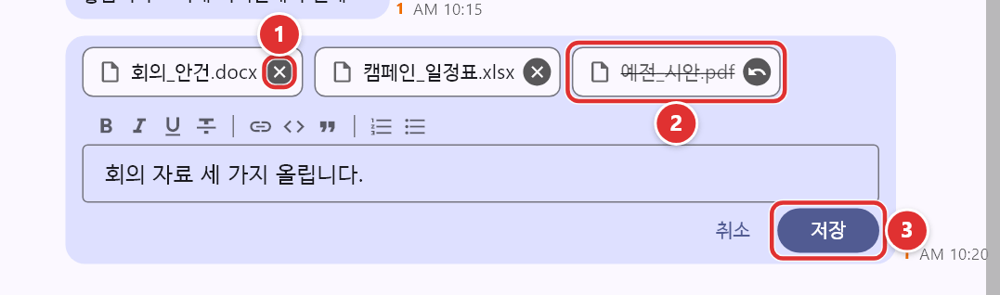
내 메시지의 ⋮ › 수정을 누르면 첨부마다 오른쪽 위에 ✕가 붙습니다. 뺄 첨부의 ✕를 누릅니다.
뺄 첨부는 파일 이름에 줄이 그어지고(사진은 흐려지며 삭제 예정), ✕가 되돌리기 화살표로 바뀝니다. 다시 누르면 취소됩니다. 아래 칸에서 설명 글도 고칠 수 있습니다(비워도 됩니다).
저장을 눌러야 실제로 빠집니다. 취소를 누르면 아무것도 바뀌지 않습니다.
첨부를 모두 빼고 설명 글도 비우면 남는 내용이 없어서, 저장 대신 메시지를 삭제할지 묻습니다. 고칠 수 있는 시간은 고치기와 지우기의 규칙과 같고, 비밀 대화에서는 이렇게 고칠 수 없습니다.
파일만 지우기
메시지와 댓글은 그대로 두고 파일만 지울 수 있습니다. 파일을 올린 본인과 팀 소유자 · 관리자만 할 수 있습니다.

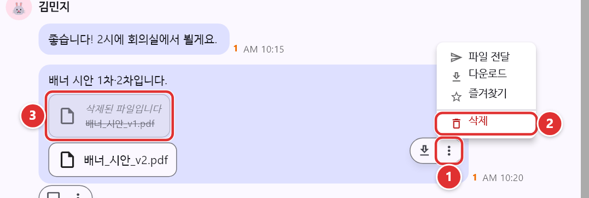
대화 속 파일(또는 사진)에 마우스를 올리면 그 칸 오른쪽 위에 다운로드와 ⋮가 나타납니다. ⋮를 누릅니다.
삭제를 누르고, 이 파일을 삭제할까요?에서 삭제를 누릅니다. (삭제 항목은 지울 수 있는 사람에게만 보입니다.)
지운 파일 자리에는 흐린 삭제된 파일입니다 카드와 줄 그은 파일 이름만 남습니다. 메시지 글과 그 파일에 달린 댓글은 그대로 있습니다.
6알림과 안 읽은 메시지
안 읽은 메시지 수

칸 제목 옆 빨간 숫자는 그 칸(토픽·그룹채팅·채팅)의 방들에 쌓인 안 읽은 메시지를 모두 더한 수입니다.
방 이름 옆 빨간 숫자는 그 방의 안 읽은 메시지 수입니다. 방을 열면 사라집니다.
알림 센터

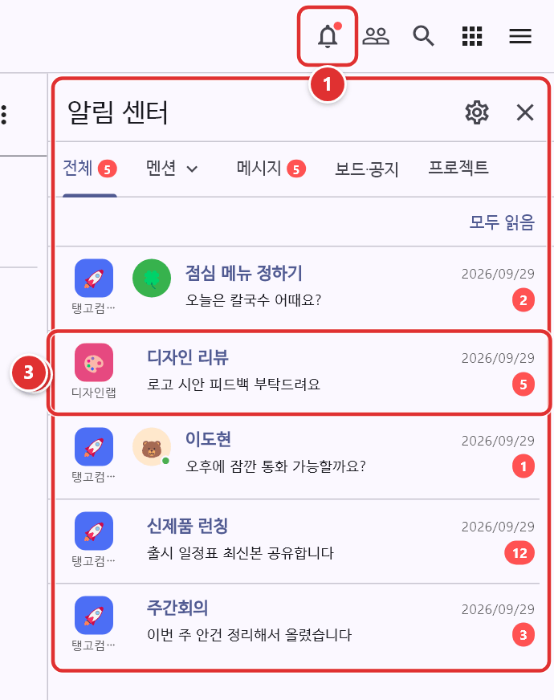
오른쪽 위 알림 센터(종 모양)를 누릅니다. 빨간 점이 있으면 새 알림이 있다는 뜻입니다.
오른쪽에 알림 센터가 열립니다. 위쪽 탭으로 전체 · 멘션 · 메시지 · 보드·공지 · 프로젝트 알림을 나눠 봅니다(탭 옆 빨간 숫자는 안 읽은 수). 안 읽은 메시지가 있는 방은 최근 순으로 모여 있고, 누르면 바로 열립니다. 모두 읽음은 안 읽은 대화를 한꺼번에 읽음으로 표시합니다. 톱니(알림 설정)에서는 탭마다 안 읽은 알림만 보일지 등을 정합니다.
왼쪽에 팀 아이콘과 이름이 있어 다른 팀의 방도 구분됩니다. 다른 팀 방을 누르면 그 팀으로 옮겨 가며 방이 열립니다. 안 읽은 공지가 있는 토픽은 📢 표시와 함께 공지 내용이 보입니다.
멘션 · 보드 알림 모아 보기
알림 센터 위쪽 탭에서 알림을 종류별로 나눠 봅니다. 나를 부른 멘션과 보드 게시글 소식은 읽기 전까지 여기에 남아 있어서, 대화가 많이 쌓여도 놓치지 않습니다.

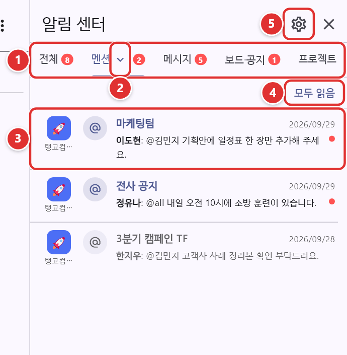
위쪽 탭을 고릅니다. 탭 옆 빨간 숫자는 안 읽은 알림 수입니다.
멘션 탭 이름 옆 ⌄를 누르면 전체 멘션 · @나를 멘션 · @all 멘션 중에서 고를 수 있습니다. 고른 종류가 탭 이름(멘션 · @나 · @all)에 나타납니다.
알림을 누르면 그 대화방의 해당 메시지로 바로 이동하고 읽음이 됩니다. 안 읽은 알림은 진하게, 오른쪽에 빨간 점이 있습니다. 왼쪽 팀 아이콘으로 어느 팀의 알림인지 구분합니다.
모두 읽음은 지금 탭의 알림을 한꺼번에 읽음으로 바꿉니다.
알림 설정(톱니)을 누르면 아래 창이 열립니다.
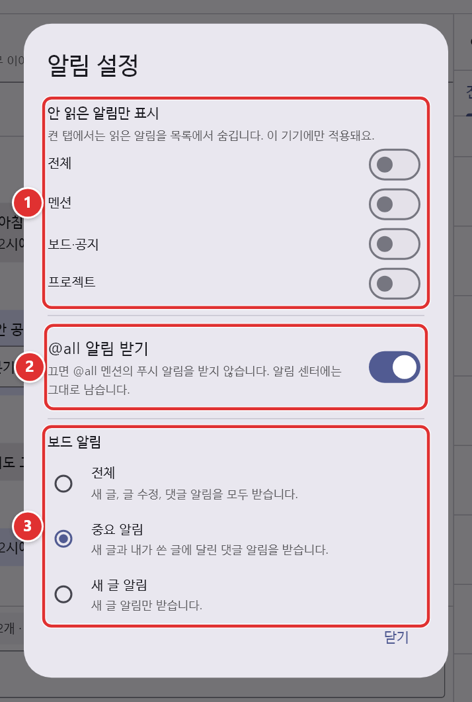
알림 설정

| 번호 | 항목 | 설명 |
|---|---|---|
| 1 | 안 읽은 알림만 표시 | 켠 탭에서는 읽은 알림을 목록에서 숨깁니다. 이 기기에만 적용됩니다. |
| 2 | @all 알림 받기 | 끄면 @all 멘션의 푸시 알림을 받지 않습니다. 알림 센터에는 그대로 남습니다. |
| 3 | 보드 알림 | 전체(새 글 · 글 수정 · 댓글 모두), 중요 알림(새 글과 내가 쓴 글에 달린 댓글 — 처음 설정), 새 글 알림(새 글만) 중에서 고릅니다. |
PC 알림과 창 닫기 PC
- 새 메시지가 오면 화면 오른쪽 아래에 Windows 알림이 뜨고, 작업 표시줄의 TangoTalk 아이콘이 깜빡입니다. 알림을 누르면 그 대화방이 열립니다. 지금 보고 있는 대화방의 메시지는 알림이 뜨지 않습니다.
- 창의 ✕를 눌러도 TangoTalk은 꺼지지 않고, 작업 표시줄 오른쪽 아래(알림 영역)의 아이콘으로 숨어서 계속 알림을 받습니다. 아이콘을 누르면 창이 다시 열립니다.
- 완전히 끄려면 그 아이콘을 오른쪽 클릭하고 완전히 종료를 누릅니다.
- 특정 방의 알림만 끄려면 대화방 위쪽의 종 모양 버튼(대화방 위쪽 버튼)이나 목록의 오른쪽 클릭 메뉴(대화방 알림 끄기)를 쓰세요. 알림 내용을 숨기려면 환경설정 › 메신저 설정의 메시지 내용 미리보기를 바꿉니다.
7대화방 정리하기
목록에서 오른쪽 클릭 PC

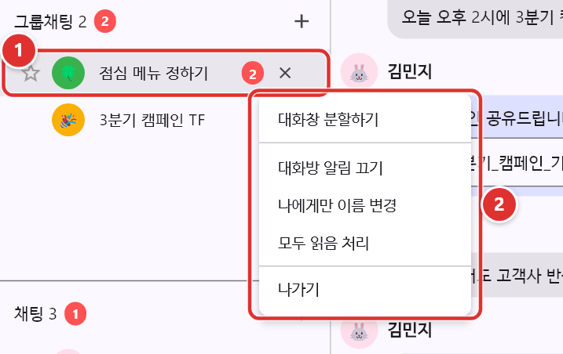
목록에서 대화방 이름을 마우스 오른쪽 버튼으로 누릅니다. 마우스를 올리기만 해도 이름 앞에 회색 ☆, 오른쪽 끝에 ✕가 나타납니다.
메뉴에서 원하는 일을 고릅니다.
| 항목 | 하는 일 |
|---|---|
| 대화창 분할하기 | 이 방을 지금 열린 대화 오른쪽에 하나 더 엽니다. 두 방을 나란히 볼 수 있습니다(창이 넓을 때). 분할 창 위의 ✕로 닫습니다. |
| 비밀대화 시작하기 | 1:1 방에만 보입니다. 그 사람과 비밀 대화를 시작합니다. |
| 대화방 알림 끄기 | 이 방의 새 메시지 알림을 끕니다. 안 읽은 숫자는 계속 보이고, 방 이름 옆에 🔕 모양이 붙습니다. 다시 누르면 대화방 알림 켜기입니다. |
| 나에게만 이름 변경 | 그룹채팅에만 보입니다. 방 이름을 나에게만 다르게 보이게 바꿉니다. 비우고 저장하면 원래 이름으로 돌아갑니다(바꾼 뒤에는 메뉴 옆 괄호에 원래 이름이 보입니다). |
| 모두 읽음 처리 | 방을 열지 않고 안 읽은 표시를 지웁니다. |
| 폴더로 이동 › | 토픽에만 보입니다. 오른쪽에 내 폴더 목록이 열리고, 고른 폴더로 토픽을 옮깁니다(토픽 폴더). |
| 폴더에서 빼기 | 폴더에 들어 있는 토픽에만 보입니다. 폴더 밖 목록으로 꺼냅니다. |
| 숨기기 | 1:1 방에만 보입니다. 목록에서 숨깁니다. 상대가 새 메시지를 보내거나 다시 대화를 시작하면 예전 내용과 함께 돌아옵니다. |
| 나가기 | 대화방에서 나갑니다. 1:1 방에서 나가기에 체크하고 나가면, 다시 대화해도 예전 내용이 보이지 않습니다. 토픽의 마지막 토픽 관리자는 바로 나갈 수 없습니다(나가기 규칙). |
즐겨찾기: 방 이름 앞의 ☆를 누르면 노란 ★이 되고, 그 방이 칸의 맨 위로 올라갑니다. 대화방 위쪽 이름 옆의 ☆로도 켜고 끌 수 있습니다.
대화방 위쪽 버튼과 ⋮ 메뉴
열린 대화방의 맨 위 줄에는 방 이름과 함께 자주 쓰는 버튼이 있습니다. 토픽이면 이름 옆에 회색 자물쇠(비공개)와 보드 뷰 · 읽기 전용 · 보관됨 표시가 붙기도 합니다.

멤버 N(사람 모양과 숫자): 이 방의 멤버 수입니다. 누르면 오른쪽에 이 방의 멤버 목록이 열립니다 (참여 멤버). 1:1 채팅에는 없습니다.
종 모양: 이 방의 알림을 끄거나 켭니다. 끄면 종에 빗금이 생기고, 목록의 방 이름 옆에 🔕 모양이 붙습니다.
멤버 초대(사람 모양에 +): 멤버 초대하기 창을 엽니다(정회원 이상, 1:1 채팅 제외).
⋮(더보기)를 누르면 메뉴가 열립니다.

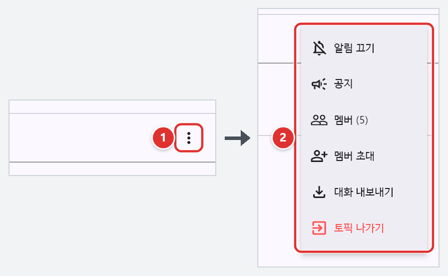
메뉴에서 고릅니다. 방 종류와 내 권한에 따라 보이는 항목이 조금 다릅니다.
| 항목 | 하는 일 |
|---|---|
| 공지 | 토픽에만 있습니다. 공지 목록을 엽니다(공지). |
| 파일 보기 | 이 방에서 주고받은 파일만 오른쪽에 모아 봅니다(파일 모아 보기). |
| 링크 보기 | 이 방에서 주고받은 링크만 모아 봅니다(링크 모아 보기). |
| 앨범 보기 | 이 방의 사진 앨범을 오른쪽에 엽니다. |
| 자동 삭제 타이머 | 비밀 대화에만 있습니다(비밀 대화에는 파일 보기 · 링크 보기 · 앨범 보기 · 대화 내보내기가 없습니다). |
| 보안 코드 확인 | 비밀 대화에만 있습니다. 상대와 보안 코드를 비교합니다(비밀 대화 보안 코드 확인). 확인해 두면 옆에 확인함이 붙습니다. |
| 대화 내보내기 | 대화 내용을 엑셀 파일(.xlsx)로 받습니다. 기간을 고르지 않으면 전체 대화를 받습니다. |
| 정보 변경하기 | 토픽의 토픽 관리자와 팀 관리자에게만 보입니다(토픽 정보 변경하기). |
| 정보 변경 · 나에게만 이름 변경 | 그룹채팅에만 있습니다. 정보 변경은 그룹 이름 · 설명 · 아이콘을 모두에게 바꿉니다(정회원 이상 멤버). 나에게만 이름 변경은 목록 오른쪽 클릭 메뉴와 같습니다. |
| 토픽 나가기 · 채팅방 나가기 · 채팅방 숨기기 | 방에서 나가거나(1:1은) 목록에서 숨깁니다. |
토픽 폴더
토픽이 많으면 내 폴더로 묶어 둘 수 있습니다. 폴더는 나에게만 보이는 정리 도구라서 다른 사람의 목록에는 아무 영향이 없고, 팀마다 따로 만듭니다. 새 폴더는 토픽 칸 옆 + › 폴더 생성을 누르고, 이름(30자까지)을 쓴 뒤 생성을 누르면 생깁니다. 휴대폰에서는 토픽 탭과 폴더를 보세요.
폴더 보기와 폴더 메뉴

폴더 머리글을 누르면 접히고 펼쳐집니다. 폴더 안의 토픽은 한 칸 들여 써져 있습니다.
머리글에 마우스를 올리면 오른쪽에 ⋯가 나타납니다. 이름 변경 · 폴더 삭제를 고릅니다. 폴더를 지워도 안의 토픽은 목록에 그대로 남습니다.
접어 둔 폴더에는 안에 든 토픽들의 안 읽은 메시지 수를 더한 빨간 숫자가 붙습니다.
이름 옆 회색 자물쇠는 비공개 토픽이라는 뜻입니다.
보관한 토픽은 맨 아래 보관된 토픽 묶음에만 모입니다. 눌러서 펼쳐 봅니다.
끌어다 놓아 폴더에 넣기

폴더에 넣을 토픽을 마우스로 누른 채 끕니다. 제자리의 토픽은 흐리게 보이고, 마우스 옆에 토픽 이름이 따라다닙니다.
폴더 머리글 위로 가져가 색이 바뀌면 놓습니다.
폴더에서 빼려면 폴더 안의 토픽을 맨 위 토픽 N 머리글로 끌어다 놓습니다. 폴더 머리글끼리 끌어다 놓으면 폴더 순서가 바뀝니다.
오른쪽 클릭 메뉴로 옮기기

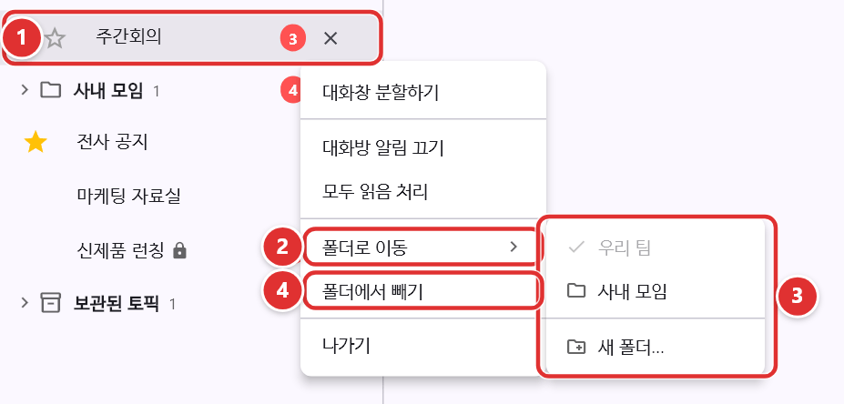
토픽을 마우스 오른쪽 버튼으로 누릅니다.
폴더로 이동을 누릅니다.
오른쪽에 내 폴더 목록이 열립니다(지금 들어 있는 폴더는 ✓ 표시로 흐리게). 옮길 폴더를 누르거나, 새 폴더…를 눌러 이름을 정하면 새 폴더를 만들면서 바로 넣습니다.
폴더 안의 토픽이면 폴더에서 빼기로 폴더 밖 목록에 꺼냅니다.
8검색과 파일
메시지 검색

오른쪽 위 검색(돋보기)을 누르면 오른쪽에 검색 창이 열립니다.
찾을 낱말을 쓰고 Enter를 누릅니다. 지금 팀에서 내가 들어가 있는 모든 방을 찾습니다.
결과가 많으면 대화방(참여 대화방), 보낸 사람(모든 멤버), 기간(기본 1년, 직접 설정 가능)으로 좁힙니다. 그 아래 탭으로 전체 · 메시지 · 투표 · 파일 · 대화방(방 이름) 중 무엇을 찾을지 고르고, 오른쪽의 현재 팀을 모든 팀으로 바꾸면 내가 속한 다른 팀까지 찾습니다. 최신 순을 누르면 과거 순으로 바뀝니다.
결과를 누릅니다. 찾는 낱말은 노란색으로 칠해져 있습니다.
왼쪽 대화 화면이 그 메시지로 이동하고, 잠깐 노랗게 표시됩니다.
파일 모아 보기

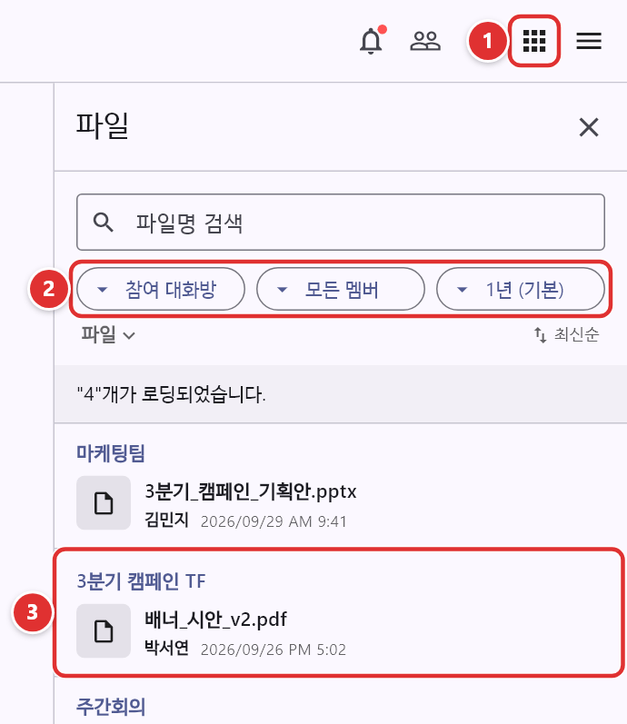
오른쪽 위 메뉴(점 아홉 개)를 누르고 리스트 묶음의 파일을 고릅니다.
위쪽 칸에 파일 이름을 쳐서 찾고, 대화방 · 보낸 사람 · 기간으로 거를 수 있습니다. 그 아래 파일 ⌄를 누르면 파일 종류(이미지 · 문서 · PDF · 엑셀 · 파워포인트 · 동영상 · 오디오 · 압축 파일 · 기타)를 고릅니다. 대화방을 연 상태에서 열면 처음에는 그 방의 파일만 보입니다(대화방 ⋮ › 파일 보기로 열어도 같습니다).
파일을 누르면 창 안에서 미리 볼 수 있습니다. 마우스를 올리면 나타나는 ☆로 즐겨찾기하면 목록 맨 위에 모입니다.
링크 모아 보기
대화에서 주고받은 인터넷 주소(링크)도 한곳에 모아 볼 수 있습니다. 오른쪽 위 메뉴(점 아홉 개) › 리스트 묶음의 링크를 누르거나, 대화방 ⋮ › 링크 보기를 누르세요(그 방의 링크만).
- 줄마다 초록색 대화방 이름, 미리보기 그림, 제목(없으면 사이트 이름), 파란 링크 주소가 보입니다. 파란 주소를 누르면 링크가 열리고, 그림이나 제목을 누르면 그 링크를 보낸 메시지로 이동합니다.
- 위쪽 칸에 낱말을 쳐서 찾고, 대화방 · 보낸 사람 · 기간으로 거를 수 있습니다(파일 창과 같습니다).
- 줄에 마우스를 올리면 대화방에서 보기와 링크 복사 버튼이 나타납니다(휴대폰은 길게 누릅니다).
날짜로 이동
대화 중간에 있는 날짜 줄(예: 2026년 9월 29일 화요일 ⌄)을 누르면 달력이 열립니다. 날짜를 고르면 그날의 대화로 바로 이동합니다. 대화를 위로 스크롤할 때 위쪽에 잠깐 뜨는 날짜를 눌러도 됩니다. 위로 많이 올라가 있을 때는 오른쪽 아래 ⌄ 버튼으로 맨 아래(최신)로 돌아옵니다.
9공지
토픽에는 모두가 꼭 봐야 할 내용을 공지로 올릴 수 있습니다. 가장 최근 공지가 대화방 맨 위에 한 줄로 고정됩니다.
공지 보기

대화방 위쪽의 공지 띠에는 공지 글 첫 줄과 올린 시각, 댓글 수, 쓴 사람이 보입니다. 띠를 누르면 오른쪽에 공지 칸이 열리면서 그 공지의 전체 내용과 댓글이 바로 보입니다(←를 누르면 공지 목록으로 갑니다).
다 읽었으면 오른쪽 ✕(이번 공지 숨기기)로 띠를 치웁니다. 나에게만 숨겨지고, 새 공지가 올라오면 다시 나타납니다.
공지 쓰기
대화방 ⋮ › 공지를 누르면 오른쪽에 공지 칸(지금까지 올라온 공지 목록)이 열립니다.

새 공지를 쓰려면 + 공지 쓰기를 누릅니다. 내용을 쓰고 등록을 누릅니다(Ctrl + Enter도 됩니다). 공지 자동 내리기에서 1시간 · 4시간 · 9시간 · 1일 · 7일 · 30일이나 지정(날짜와 시각)을 고르면, 그때가 지나 위쪽 고정이 저절로 풀립니다.
내린 공지 제외를 켜면 지금 대화방에 고정된 공지만 보입니다. 오른쪽 최신 순을 누르면 과거 순으로 바뀝니다.
📌 고정 표시가 붙은 공지가 지금 대화방 위에 걸린 공지입니다. 아직 읽지 않은 공지에는 빨간 안 읽음 표시가 붙습니다. 공지를 누르면 전체 내용과 댓글을 볼 수 있습니다.
공지에 댓글 달기
공지에 궁금한 점은 대화방에 따로 묻지 말고 공지 아래 댓글로 남기면, 공지와 답이 한곳에 모입니다.

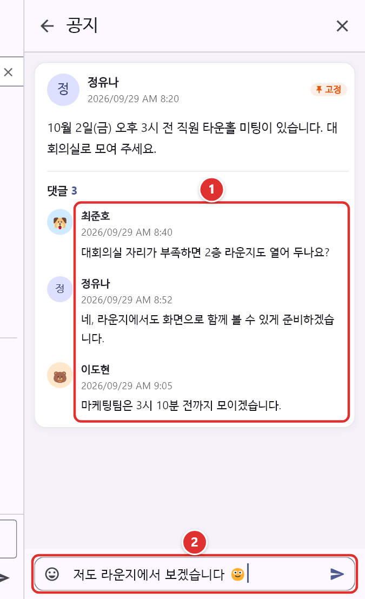
대화방 위쪽 공지 띠를 누르거나 공지 목록에서 공지를 누르면 오른쪽에 공지 전체 내용이 열리고, 그 아래에 댓글 N과 댓글들이 보입니다.
맨 아래 칸에 댓글을 쓰고 오른쪽 댓글 등록(종이비행기)을 누릅니다. 왼쪽 웃는 얼굴로 이모지를 넣을 수 있습니다. 그 토픽의 멤버라면 누구나 댓글을 달 수 있습니다.
내 댓글은 이름 오른쪽 ⋯에서 수정하기 · 삭제하기를 할 수 있습니다(고치면 (수정됨)이 붙습니다). 토픽 관리자와 팀 관리자는 다른 사람의 댓글도 지울 수 있습니다. 공지를 지우면 댓글도 함께 지워집니다. ← 를 누르면 공지 목록으로 돌아갑니다.
메시지를 공지로 올리기
대화 중에 올라온 중요한 글이나 사진을 그대로 공지로 올릴 수 있습니다.
토픽의 메시지에 마우스를 올리고 ⋮(더보기) › 공지 등록을 누릅니다.
이미 걸려 있는 공지가 있으면 기존 공지를 이 메시지로 바꿀까요?라고 묻습니다. 바꾸기를 누르면 이 메시지가 대화방 위에 걸리고, 예전 공지는 공지 목록에 기록으로 남습니다.
10토픽 관리하기
토픽마다 그 토픽을 맡아 관리하는 토픽 관리자가 있습니다. 토픽을 만든 사람이 처음 토픽 관리자가 되고, 정회원 이상 멤버를 여러 명 토픽 관리자로 정할 수 있습니다. 팀 소유자와 관리자(팀 관리자)도 자기가 들어가 있는 토픽을 토픽 관리자처럼 관리할 수 있습니다. 이 장의 정보 변경 · 보관 · 삭제 · 멤버 내보내기 · 토픽 관리자 지정은 토픽 관리자와 팀 관리자에게만 보입니다.
참여 멤버
대화방 위쪽의 멤버 N(사람 모양과 숫자, 대화방 위쪽 버튼의 1)을 누르면 오른쪽에 이 토픽의 참여 멤버 칸이 열립니다(휴대폰은 새 화면). 한 번 더 누르거나 ✕를 누르면 닫힙니다.

이름이나 직책으로 찾습니다.
목록은 나 → 토픽 소유자 → 토픽 관리자 → 팀 소유자 → 관리자 → 정회원 → 준회원 순서이고, 이름 옆 배지로 구분합니다. 토픽 소유자는 이 토픽을 만든 사람, 토픽 관리자는 이 토픽의 관리자로 지정된 사람, 팀 소유자와 관리자(계정 등급)는 지정되지 않아도 팀의 모든 토픽을 관리할 수 있는 사람이고, 준회원 배지도 있습니다(정회원은 배지가 없습니다). 여러 개에 해당하면 배지가 함께 붙습니다(예: 토픽을 만들고 지금도 관리하는 사람은 토픽 소유자 · 토픽 관리자). 사진 옆 초록 점은 지금 접속 중이라는 뜻이고, 이름을 누르면 프로필 카드가 뜹니다. 사람이 많으면 아래쪽 쪽 번호로 넘겨 봅니다.
토픽 관리자와 팀 관리자에게는 내보낼 수 있는 멤버 옆에 내보내기가 보입니다. 확인 창에서 내보내기를 누르면 그 사람은 이 토픽을 더 볼 수 없습니다(공개 토픽이면 다시 찾아서 참여할 수 있습니다). 토픽 관리자는 다른 토픽 관리자를 내보낼 수 없습니다(팀 관리자는 할 수 있습니다).
사람을 더 부르려면 대화방 위쪽의 멤버 초대(사람 모양에 +) 버튼을 누릅니다(멤버 초대하기).
토픽 정보 변경하기
대화방 ⋮ › 정보 변경하기를 누릅니다(토픽 관리자와 팀 관리자에게만 보입니다). 창에는 토픽 설정과 토픽 멤버 관리 두 탭이 있습니다.

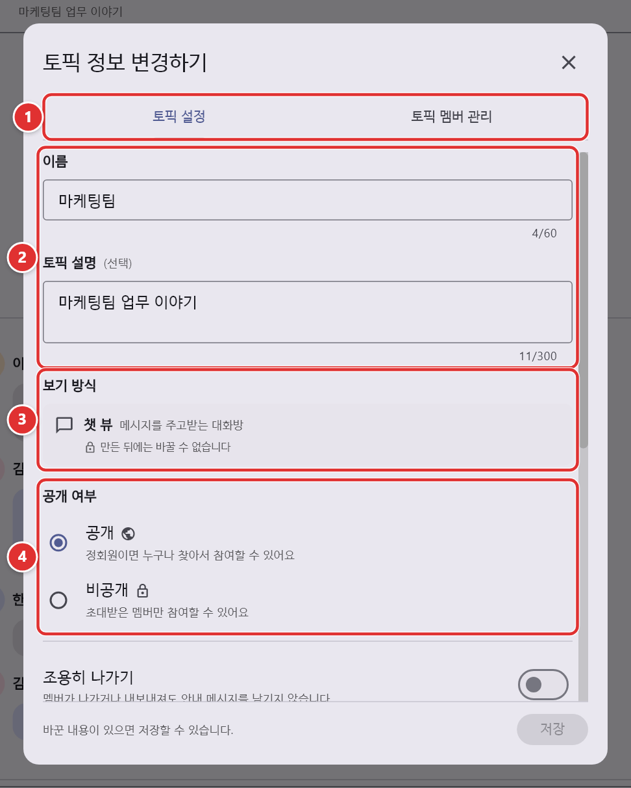
위쪽 탭에서 토픽 설정(이 그림)과 토픽 멤버 관리(아래)를 고릅니다.
이름과 토픽 설명을 고칩니다.
보기 방식(챗 뷰 · 보드 뷰)은 보여 주기만 합니다. 만든 뒤에는 바꿀 수 없습니다.
공개 여부: 공개로 바꾸면 정회원 누구나 찾아서 참여할 수 있고, 참여하면 이전 메시지도 볼 수 있습니다. 비공개로 바꾸면 그 뒤로는 초대받은 멤버만 참여할 수 있고, 지금 멤버는 그대로 남습니다(정회원 자동 초대도 꺼집니다).

필요한 설정을 켜거나 끕니다(아래 표).
저장을 누르면 바꾼 내용이 적용됩니다. 바꾼 것이 없으면 누를 수 없고, 저장하지 않은 변경이 있으면 왼쪽에 저장하지 않은 변경 사항이 있습니다.라고 나옵니다. 바꾼 항목마다 대화방에 안내 메시지가 남습니다.
토픽 보관: 다 끝난 토픽을 치워 둡니다. 확인 창에서 보관을 누르면 목록 맨 아래 보관된 토픽으로 옮겨지고, 이름 옆에 보관됨 표시가 붙으며 토픽 관리자만 글을 쓸 수 있게 됩니다. 메시지와 파일은 그대로 남고, 같은 자리의 보관 해제로 언제든 되돌립니다.
토픽 삭제: 확인 창에 토픽 이름을 그대로 입력해야 삭제 버튼이 눌립니다.
| 설정 | 켜면 |
|---|---|
| 조용히 나가기 | 멤버가 나가거나 내보내져도 "OOO 님이 나갔습니다" 같은 안내 메시지를 남기지 않습니다. 보드 뷰 토픽은 처음부터 켜져 있습니다. |
| 정회원 자동 초대 | 켠 뒤에 팀에 새로 들어오는 정회원을 이 토픽에 자동으로 초대합니다. 공개 토픽에서만 켤 수 있습니다. |
| 읽기 전용 설정 | 토픽 관리자와 팀 관리자만 메시지 · 게시글 · 공지를 쓸 수 있고, 다른 멤버는 읽고 댓글만 달 수 있습니다(아래). |
토픽 관리자 지정 · 멤버 내보내기

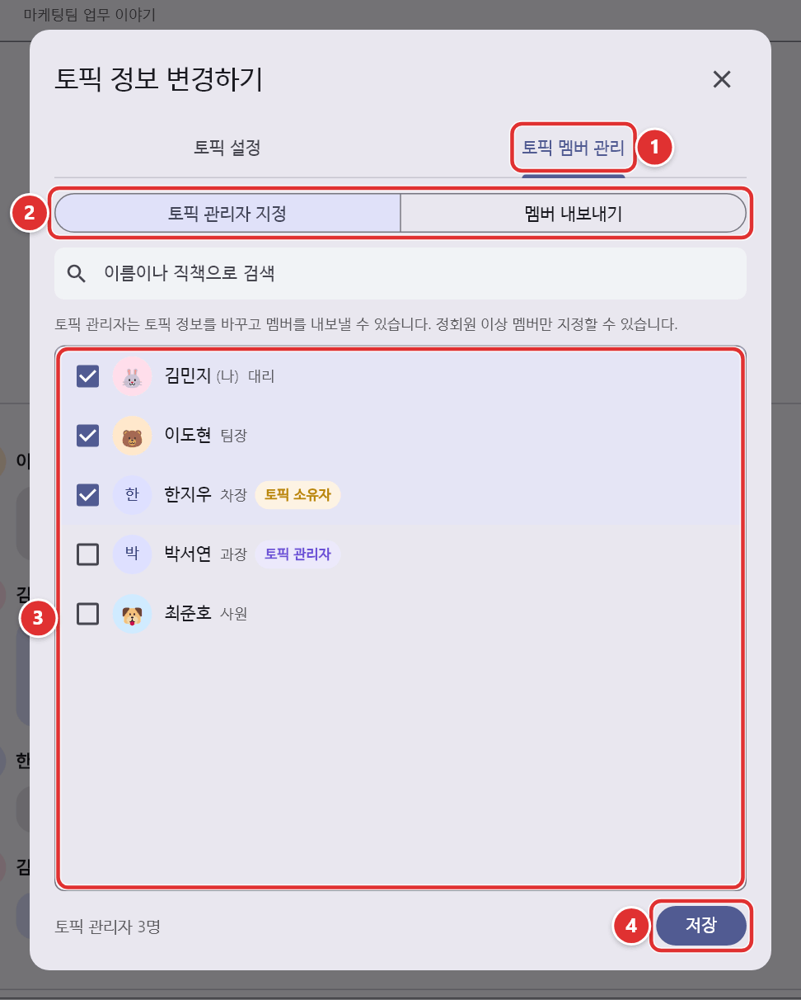
토픽 정보 변경하기 창에서 토픽 멤버 관리 탭을 누릅니다.
토픽 관리자 지정과 멤버 내보내기 중에서 고릅니다. 위쪽 칸에서 이름이나 직책으로 찾을 수 있습니다.
토픽 관리자 지정: 체크한 사람이 토픽 관리자가 됩니다. 목록에는 정회원 이상만 나옵니다(준회원은 토픽 관리자가 될 수 없습니다). 멤버 내보내기: 내보낼 사람을 체크합니다(모든 멤버 선택으로 한꺼번에).
저장(멤버 내보내기는 빨간 내보내기)을 누릅니다. 토픽 관리자는 한 명 이상이어야 하고, 나를 빼면 저장한 뒤 이 토픽을 관리할 수 없다고 미리 알려 줍니다(팀 관리자는 계속 관리할 수 있습니다).
읽기 전용 · 보관된 토픽

토픽 이름 옆에 읽기 전용 표시가 붙습니다(보관된 토픽은 보관됨).
글을 쓸 수 없는 멤버에게는 입력칸 대신 읽기 전용 토픽입니다. 토픽 관리자만 글을 쓸 수 있습니다.가 보입니다 (보관된 토픽은 보관된 토픽입니다.).
- 이런 토픽에서도 메시지와 게시글에 댓글은 누구나 달 수 있습니다.
- 화상회의는 진행 중인 회의에 누구나 참여할 수 있지만, 회의를 새로 시작하는 것은 토픽 관리자와 팀 관리자만 할 수 있습니다.
- 토픽 관리자와 팀 관리자는 평소처럼 쓸 수 있고, 입력칸 위에 읽기 전용 토픽 — 토픽 관리자만 글을 쓸 수 있어요가 작게 보입니다.
- 글을 쓸 수 없는 토픽은 메시지 공유 · 전달할 대화방 목록에도 나오지 않습니다.
- 보관된 토픽은 목록 맨 아래 보관된 토픽 묶음에만 보이고, 토픽 관리자가 보관 해제하면 원래 자리로 돌아옵니다.
누가 무엇을 할 수 있나요
| 할 일 | 할 수 있는 사람 |
|---|---|
| 새 토픽 만들기 | 정회원 이상(팀 설정에 따라 관리자 이상, 소유자, 지정된 사람만일 수 있습니다) |
| 공개 토픽 찾아서 참여하기 | 정회원 이상 |
| 멤버 초대 | 그 토픽의 정회원 이상 멤버(팀 설정에 따라 관리자만일 수 있습니다) |
| 메시지 · 게시글 쓰기 | 멤버 누구나 — 읽기 전용 · 보관된 토픽은 토픽 관리자와 팀 관리자만 |
| 공지 쓰기 | 토픽을 만들 수 있는 사람과 토픽 관리자 · 팀 관리자 — 읽기 전용 · 보관된 토픽은 토픽 관리자와 팀 관리자만 |
| 댓글 달기 | 멤버 누구나(읽기 전용 · 보관된 토픽도) |
| 화상회의 시작 | 멤버 누구나 — 읽기 전용 · 보관된 토픽은 토픽 관리자와 팀 관리자만(진행 중인 회의 참여는 누구나) |
| 정보 변경 · 보관 · 삭제 · 멤버 내보내기 · 토픽 관리자 지정 · 게시글 고정 | 토픽 관리자, 팀 관리자(소유자 · 관리자) |
11보드 뷰 토픽
보드 뷰로 만든 토픽은 채팅 대신 제목이 있는 게시글을 올리는 게시판입니다. 공지 · 회의록 · 자료처럼 오래 두고 볼 글에 좋고, 새 게시글이 맨 위에 옵니다. 보기 방식은 토픽을 만들 때만 고를 수 있습니다.
보드 화면

토픽 이름 옆에 보드 뷰 표시가 붙습니다.
고정된 게시글: 중요한 글은 맨 위에 모입니다. 세 개까지 보이고, 더 있으면 더 보기로 펼칩니다.
게시글 카드: 쓴 사람, 올린 날짜와 시각(예: 2026/10/05 PM 4:58, 고친 글은 (수정됨)), 제목, 본문 앞부분, 첨부(사진은 네 장까지 작게, 파일은 "파일 N개")가 보입니다. 카드를 누르면 게시글이 열립니다.
댓글 N: 달린 댓글 수입니다. 댓글이 있으면 파란색입니다.
게시글 작성(연필): 오른쪽 아래에 있습니다. 창이 좁으면 연필 모양 동그란 버튼만 보입니다. 바로 위의 작은 막대그래프 단추는 이 보드에 투표를 올리는 투표 만들기입니다.
아래로 내리면 예전 게시글을 더 불러옵니다. 위로 올려 둔 채 다른 사람이 새 글을 올리면 새 게시글이 있습니다 알림이 뜨고, 누르면 맨 위로 갑니다. PC 보드에 파일을 끌어다 놓으면 그 파일을 붙인 채로 게시글 작성 창이 열립니다.
게시글 쓰기

제목을 씁니다(100자까지, 꼭 써야 합니다).
본문을 씁니다(꼭 써야 합니다). 위쪽 서식 도구로 굵게 · 기울임 · 밑줄 · 취소선 · 링크 · 코드 · 인용 · 목록을 넣을 수 있습니다.
파일 첨부로 사진과 파일을 30개까지 붙입니다. PC 이 창에 파일을 끌어다 놓거나 복사한 그림을 Ctrl + V로 붙여 넣어도 됩니다. 붙이자마자 올라가기 시작하고, 오른쪽 위 ✕로 뺍니다.
게시를 누르면 보드 맨 위에 올라갑니다(Ctrl + Enter도 됩니다). 게시 옆 예약을 누르면 정한 시각에 올라가도록 예약할 수 있습니다. 취소나 Esc로 닫을 때 쓰던 내용이 있으면 버릴지 한 번 더 묻습니다.
고정 · 수정 · 삭제

게시글 오른쪽 위의 ⋯(더보기)를 누릅니다. 즐겨찾기는 누구나 할 수 있어서 이 버튼은 늘 보입니다.
원하는 항목을 고릅니다.
| 항목 | 하는 일 | 할 수 있는 사람 |
|---|---|---|
| 즐겨찾기 | 이 게시글을 즐겨찾기에 모읍니다(오른쪽 위 메뉴 › 즐겨찾기). | 누구나 |
| 게시글 고정 / 게시글 고정 해제 | 맨 위 고정된 게시글에 올리거나 내립니다. 고정한 글은 이름 옆에 📌 고정 표시가 붙습니다. | 토픽 관리자, 팀 관리자 |
| 수정 | 제목과 본문을 고칩니다(첨부는 바꿀 수 없습니다). 게시글은 고칠 수 있는 시간 제한이 없습니다. | 쓴 사람 |
| 삭제 | 확인한 뒤 지웁니다. | 쓴 사람, 토픽 관리자, 팀 관리자 |
팀에서 메시지 수정 · 삭제를 꺼 두었으면 게시글도 고치거나 지울 수 없습니다. 읽기 전용 · 보관된 보드에서는 쓴 사람이라도 토픽 관리자가 아니면 고칠 수 없습니다(지우기는 할 수 있습니다).
게시글 보기와 댓글

게시글 카드를 누르면 PC는 오른쪽에 게시글 창이, 휴대폰은 새 화면이 열립니다. 제목과 본문 전체를 볼 수 있습니다. 쓴 사람 옆 ⋯는 카드의 메뉴와 같습니다.
사진은 누르면 크게 보이고, 파일은 눌러서 열거나 내려받습니다. 여러 개면 전체 다운로드 (N)으로 한꺼번에 받습니다.
아래에 댓글이 모입니다.
댓글 입력칸에 쓰고 Enter를 누르면 댓글이 달립니다. 이모티콘과 파일도 붙일 수 있습니다.
12투표
점심 메뉴, 회의 날짜, 워크숍 장소처럼 여럿의 의견을 모을 때는 대화방에 투표를 올리세요. 대화방 멤버 누구나 투표 카드에서 바로 투표하고, 결과는 실시간으로 바뀝니다.
투표 만들기

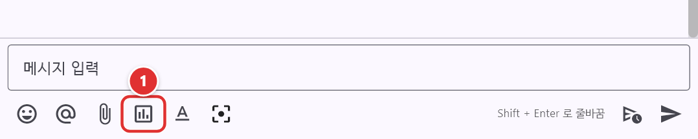
대화방 입력칸 아래의 투표(막대그래프 모양) 단추를 누릅니다. 투표 만들기 창이 열립니다.

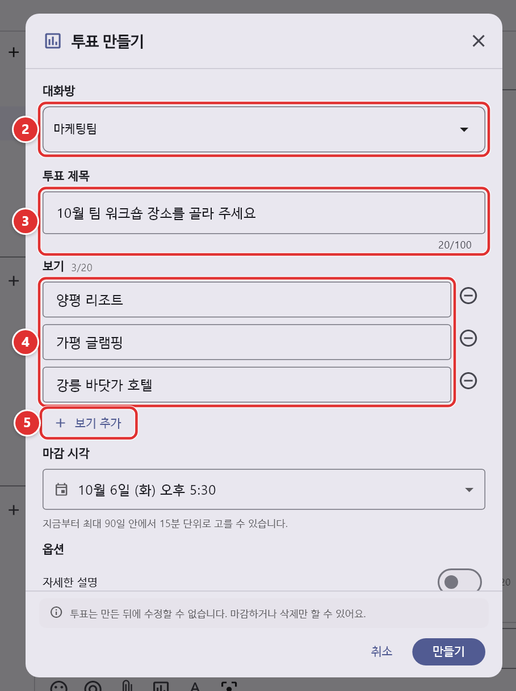
대화방: 투표를 올릴 대화방입니다. 입력칸에서 열었으면 지금 대화방이 미리 들어가 있고, 눌러서 다른 방으로 바꿀 수 있습니다.
투표 제목을 씁니다(100자까지).
보기를 씁니다. 2개 이상 있어야 하고, 같은 보기를 두 번 쓸 수 없습니다. 오른쪽 ⊖로 보기 칸을 뺍니다.
보기가 더 필요하면 보기 추가를 누릅니다(20개까지).

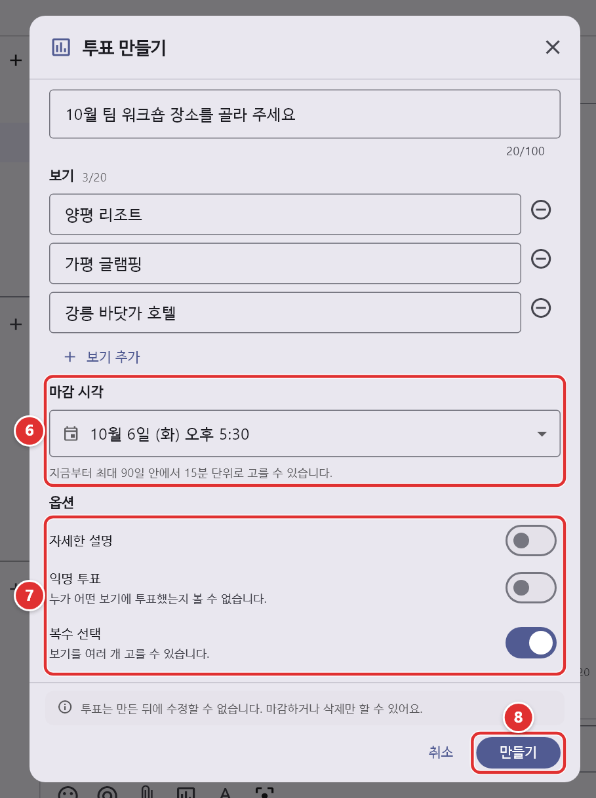
마감 시각을 고릅니다. 처음에는 하루 뒤로 잡혀 있고, 지금부터 90일 안에서 15분 단위로 바꿀 수 있습니다. 이 시각이 지나면 투표가 저절로 마감됩니다.
필요한 옵션을 켭니다.
- 자세한 설명: 제목 아래에 보일 설명을 씁니다.
- 익명 투표: 누가 어느 보기에 투표했는지 아무도(투표를 만든 사람과 관리자도) 볼 수 없습니다. 보기마다 표 수만 보입니다. 내가 고른 보기는 내 기기들(PC · 휴대폰)에만 전해지고, 다른 사람의 앱으로는 표 수만 갑니다.
- 복수 선택: 한 사람이 보기를 여러 개 고를 수 있습니다.
만들기를 누르면 대화방에 투표 카드가 올라갑니다.
투표하기

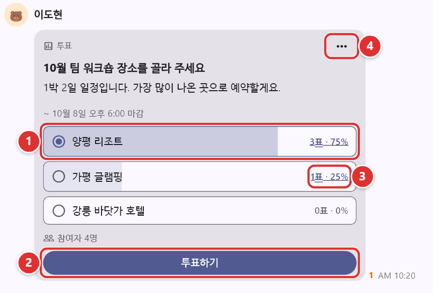
마음에 드는 보기를 누릅니다. 복수 선택 투표(복수 선택 배지)는 네모 칸이 보이고 여러 개를 고를 수 있습니다.
투표하기를 누릅니다.
보기마다 표 수 · 비율과 막대가 보입니다. 숫자에 밑줄이 있으면 눌러서 그 보기에 투표한 사람을 볼 수 있습니다(익명 투표는 볼 수 없습니다). 카드 아래에는 지금까지 투표한 사람 수(참여자 N명)가 보입니다.
⋯(더보기)를 누르면 투표 메뉴가 열립니다(아래).

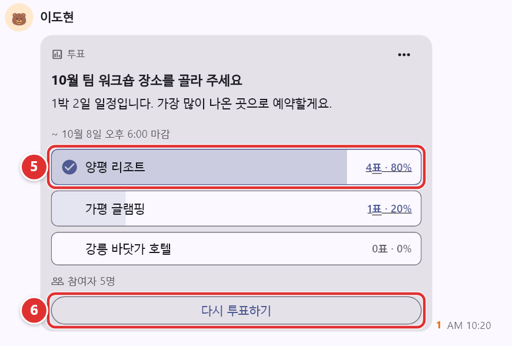
내가 고른 보기에는 ✓ 표시가 붙습니다.
마음이 바뀌면 다시 투표하기를 누르고 다른 보기를 고른 뒤 투표하기를 누릅니다. 그만두려면 취소를 누릅니다. 복수 선택 투표는 고른 것을 모두 풀면 단추가 투표 취소로 바뀌고, 누르면 내 표가 빠집니다.
투표 메뉴 — 댓글 · 즐겨찾기 · 마감 · 삭제

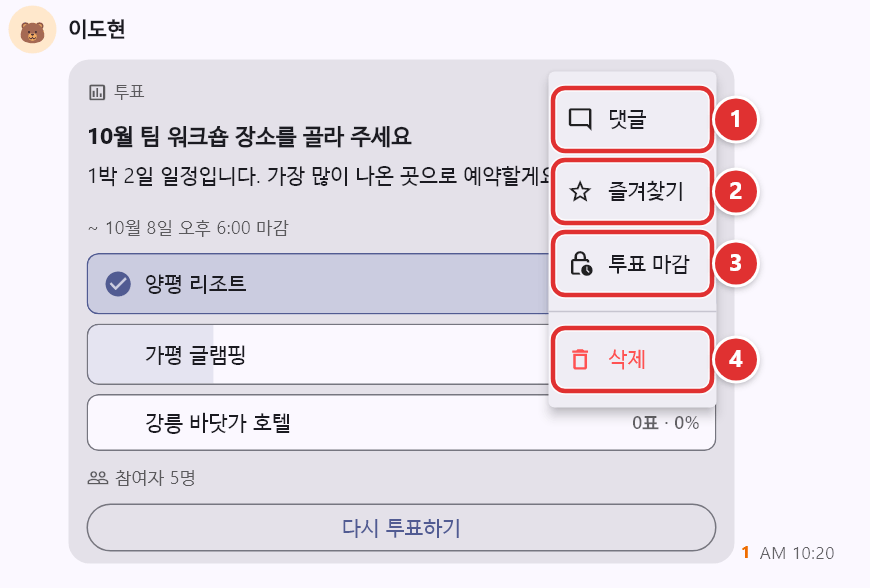
댓글: 오른쪽에 댓글 창이 열립니다. 메시지 댓글과 같습니다.
즐겨찾기: 카드 위쪽에 노란 ★가 붙고, 메뉴 › 즐겨찾기에서 다시 찾을 수 있습니다. 한 번 더 누르면 즐겨찾기 해제입니다.
투표 마감: 마감 시각 전에 투표를 끝냅니다. 확인 창에서 마감을 누릅니다.
삭제: 투표를 지웁니다. 확인 창에서 삭제를 누릅니다.
투표 모아 보기
여러 대화방의 투표를 한곳에서 보고, 그 자리에서 바로 투표할 수 있습니다.

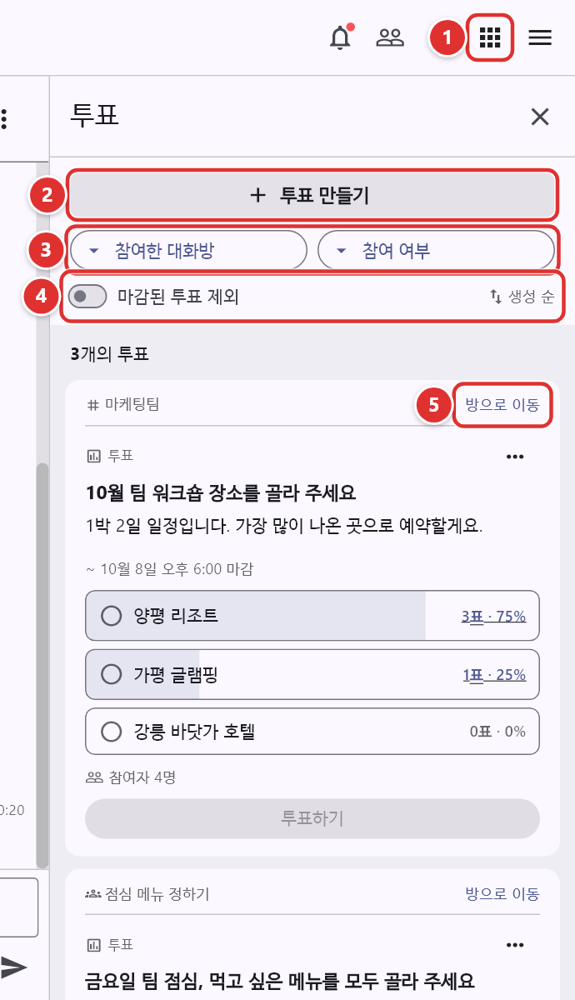
오른쪽 위 메뉴(점 아홉 개)를 누르고 생성 묶음의 투표를 누릅니다. 오른쪽에 투표 패널이 열립니다.
투표 만들기로 새 투표를 만듭니다(대화방을 직접 고릅니다).
참여한 대화방으로 대화방 하나만 보고, 참여 여부로 참여함 · 참여 안 함을 골라 봅니다.
마감된 투표 제외를 켜면 아직 진행 중인 투표만 보입니다. 오른쪽 정렬로 생성 순(최근에 만든 것부터) · 기한 순(마감이 가까운 것부터)을 고릅니다.
방으로 이동을 누르면 그 대화방의 그 투표로 갑니다.
13할 일
대화방에서 나온 일을 할 일로 만들어 담당자와 기간을 정하고, 각자 얼마나 했는지(진행률)를 함께 볼 수 있습니다. 할 일은 대화방에 묶이고, 만들면 그 대화방에 할 일 카드가 올라갑니다. 프로젝트의 업무와는 따로입니다.
할 일 목록 열기

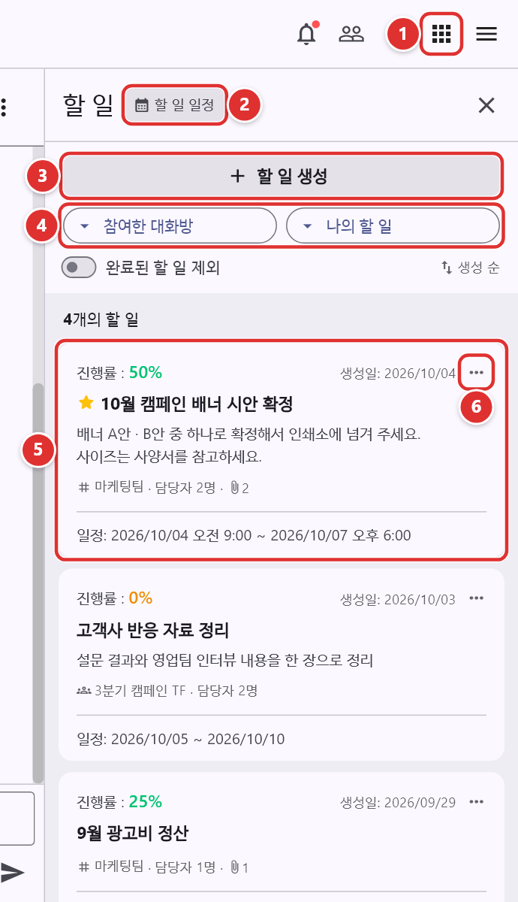
오른쪽 위 메뉴(점 아홉 개)를 누르고 생성 묶음의 할 일을 누릅니다. 오른쪽에 할 일 패널이 열립니다.
할 일 일정: 할 일을 달력으로 봅니다(아래).
+ 할 일 생성: 새 할 일을 만듭니다(아래).
볼 할 일을 고릅니다.
- 참여한 대화방: 대화방 하나의 할 일만 봅니다.
- 보기 — 나의 할 일(처음 보기 · 내가 담당인 것과 내가 만든 담당자 없는 것), 모든 할 일(내가 들어가 있는 대화방의 할 일 전부), 부여한 할 일(내가 만들어 다른 사람에게 맡긴 것 — 옆에서 담당 멤버를 골라 볼 수 있습니다).
- 아래 줄의 완료된 할 일 제외를 켜면 끝난 할 일이 빠지고, 오른쪽 정렬로 생성 순 · 기한 순을 고릅니다.
할 일 카드에는 진행률, 제목, 설명, 대화방 · 담당자 수 · 첨부 수, 일정이 보입니다. 즐겨찾기한 할 일은 제목 앞에 ★가 붙고, 기한이 지났는데 아직 안 끝난 할 일은 일정이 빨간 글자로 보입니다. 카드를 누르면 상세가 열립니다.
⋯: 즐겨찾기 · 할 일 수정 · 파일 다운로드 · 파일 업로드 · 할 일 삭제(상세의 ••• 메뉴와 같습니다).
할 일 만들기
할 일 패널의 + 할 일 생성을 누르면 할 일 생성 창이 열립니다. 칸 이름 대신 왼쪽에 회색 아이콘이 있습니다.

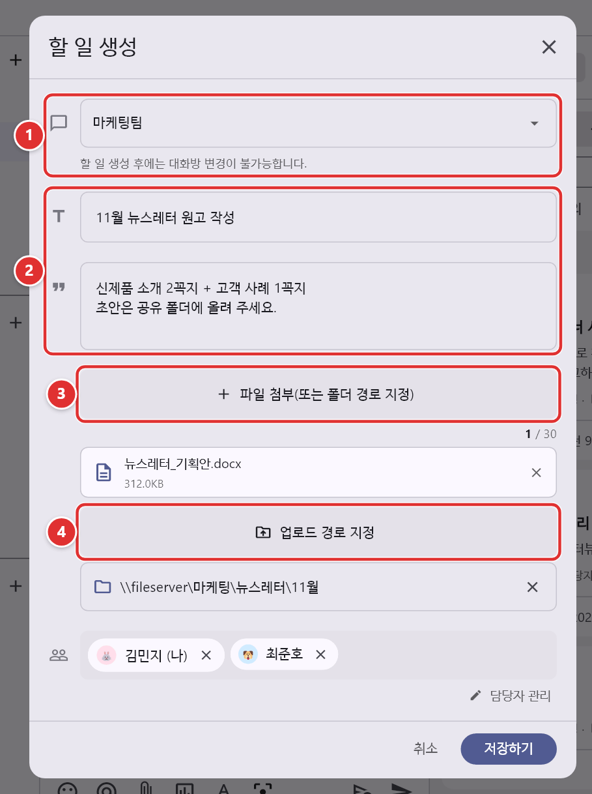
대화방: 할 일이 올라갈 대화방입니다. 지금 열어 둔 대화방(없으면 나와의 대화)이 미리 들어가 있고, 눌러서 바꿀 수 있습니다. 할 일을 만든 뒤에는 대화방을 바꿀 수 없습니다.
제목(꼭 써야 합니다, 100자까지)과 설명(쓰지 않아도 됩니다)을 씁니다.
파일 첨부(또는 폴더 경로 지정): 담당자가 받아 갈 파일을 붙입니다(30개까지). PC에서는 파일 대신 폴더를 연 채로 열기를 누르면 그 폴더 경로를 알려 줄 수 있습니다.
업로드 경로 지정 PC: 담당자가 결과물을 올릴 폴더(공유 폴더 등)를 정합니다. 정하지 않으면 담당자가 올린 파일은 나에게 메시지로 옵니다.

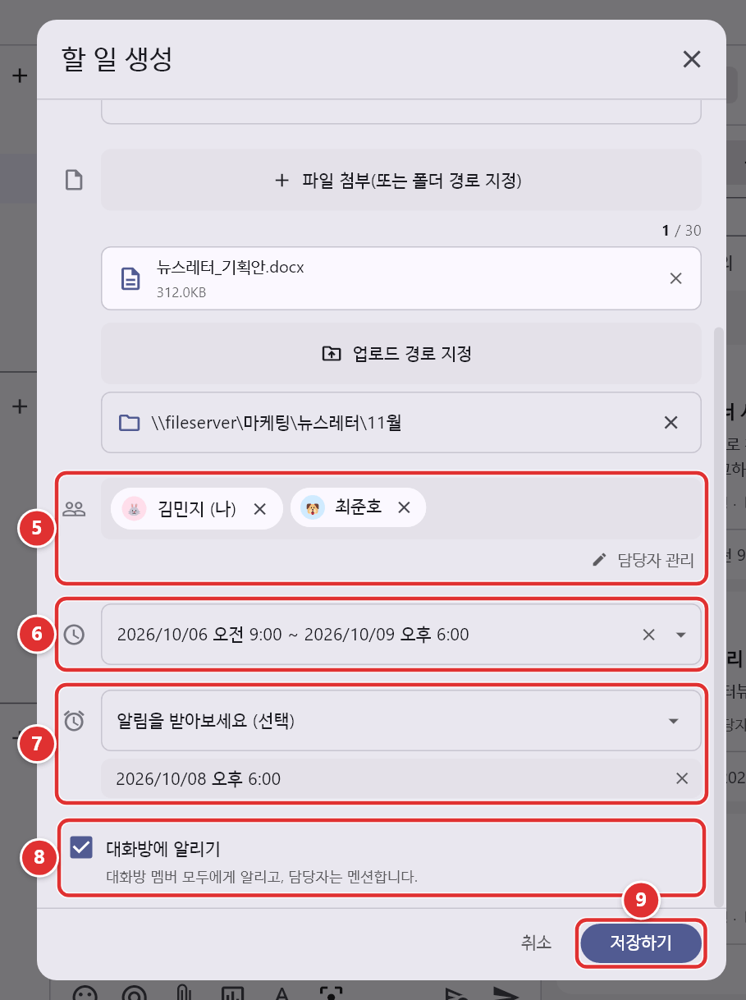
담당자: 처음에는 나만 들어 있습니다. 담당자 관리를 눌러 그 대화방 멤버 중에서 고르고 확인을 누릅니다(30명까지). 이름 옆 ✕로 뺄 수 있습니다.
기간: 칸을 누르면 달력이 열립니다. 처음 누른 날이 시작일, 다음에 누른 날이 종료일(기한)입니다. 달력 아래 시작 시간 · 종료 시간에서 시각을 15분 단위로 고르거나 시간 없음으로 둡니다. 바깥을 누르면 달력이 닫힙니다.
알림: 알림을 받아보세요 (선택)을 누르고 기한 하루 전 · 기한 1시간 전 · 직접 지정 중에서 고릅니다(5개까지). 앞의 두 개는 기간을 먼저 정해야 고를 수 있고, 종료 시간이 없으면 기한일 오후 6시를 기준으로 합니다.
대화방에 알리기: 켜 두면(처음 상태) 대화방 멤버 모두에게 알림이 가고 담당자는 멘션됩니다. 끄면 할 일 카드는 그대로 올라가지만 알림은 담당자에게만 멘션으로 갑니다.
저장하기를 누르면 할 일이 만들어지고, 그 대화방에 할 일 카드가 올라갑니다.
대화방의 할 일 카드

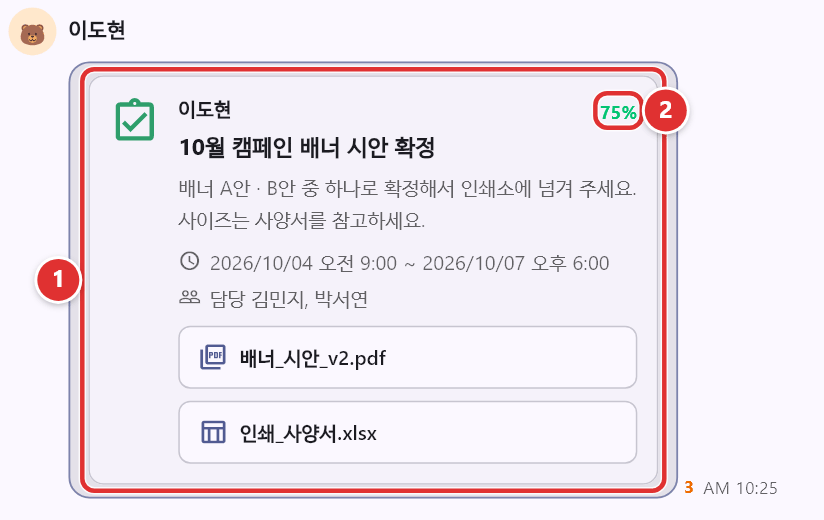
카드에는 만든 사람, 제목, 설명, 기간, 담당자, 첨부 파일이 보입니다. 카드를 누르면 오른쪽 할 일 패널에 그 할 일의 상세가 열립니다.
오른쪽 위 숫자는 전체 진행률입니다. 담당자가 진행률을 바꾸면 카드에도 바로 반영되고, 할 일이 지워지면 삭제된 할 일입니다.로 바뀝니다.
할 일 상세와 완료하기

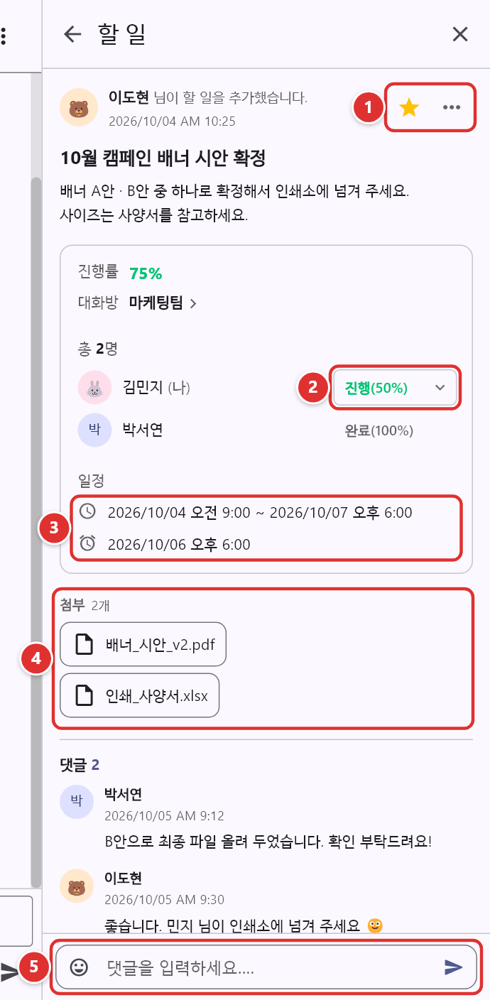
☆로 즐겨찾기하고, •••에서 할 일 수정 · 파일 다운로드 · 파일 업로드 · 할 일 삭제를 합니다(아래 표의 사람에게만 보입니다).
담당자 목록에서 (나) 줄의 진행률 상자를 눌러 내 진행률을 바꿉니다. 다른 담당자의 진행률은 글자로만 보입니다. 맨 위 진행률은 담당자 모두의 진행률을 모은 값입니다. 대화방 이름을 누르면 그 대화방으로 갑니다.
일정: 기간(🕓)과 알림 시각(⏰)입니다. 이미 울린 알림에는 (알림 보냄)이 붙습니다.
첨부: 파일을 눌러 엽니다. 한꺼번에 받으려면 ••• › 파일 다운로드를 누릅니다 (PC는 받을 폴더를 고르고, 휴대폰은 다운로드 폴더에 저장됩니다). 메시지에서 만든 할 일이면 아래에 원본 메시지 보기가 있습니다.
맨 아래 칸에 댓글을 쓰고 보내기를 누릅니다. 그 대화방 멤버 누구나 댓글을 달 수 있습니다.

일을 끝냈으면 완료(100%)를 고릅니다. 담당자가 모두 완료하면 할 일 전체가 100%(완료)가 됩니다. 담당자가 없는 할 일은 만든 사람이 맨 위 진행률 칸에서 바로 고릅니다.
| 할 일 | 할 수 있는 사람 |
|---|---|
| 내 진행률 바꾸기 | 담당자 각자(담당자가 없으면 만든 사람) |
| 할 일 수정(제목 · 설명 · 파일 · 기간 · 알림), 파일 업로드 | 만든 사람, 담당자 |
| 담당자 바꾸기, 할 일 삭제 | 만든 사람 |
| 파일 다운로드 · 업로드 폴더 경로 바꾸기 | 만든 사람 |
| 즐겨찾기, 댓글 달기 | 그 대화방 멤버 누구나 |
메시지를 할 일로 등록
대화 중에 나온 부탁을 바로 할 일로 만들 수 있습니다. 메시지에 마우스를 올리고 ⋮ › 할 일로 등록을 누릅니다 (메시지 메뉴, 휴대폰은 메시지를 길게 누르기). 댓글도 같은 방법으로 등록할 수 있습니다.

대화방은 그 메시지가 있는 대화방으로 정해져 있고(🔒) 바꿀 수 없습니다.
제목에는 메시지의 첫 줄이, 설명에는 메시지 전체가 미리 들어갑니다. 알맞게 고쳐 쓰세요.
메시지에 붙은 사진 · 파일도 그대로 붙습니다. 나머지(담당자 · 기간 · 알림)를 정하고 저장하기를 누릅니다.
할 일 일정(달력)

할 일 패널 위쪽의 할 일 일정을 누르면 달력이 열립니다. 할 일이 있는 날에는 날짜 아래에 작은 점이 찍힙니다.
‹ ›로 한 달씩, « »로 한 해씩 옮깁니다.
오늘을 누르면 오늘이 있는 달로 돌아옵니다.
날짜를 누르면 그 날짜를 고릅니다.
아래에 그날 기간에 걸친 할 일이 대화방별로 묶여 보입니다. 묶음 오른쪽 ⌃로 접고 펼치며, 카드를 누르면 상세가 열립니다.
목록에서 고른 필터(대화방 · 보기 · 완료된 할 일 제외)가 달력에도 그대로 적용됩니다. 왼쪽 위 ←를 누르면 목록으로 돌아갑니다.
14앨범
앨범은 대화방 안에서 사진과 영상을 주제별로 모아 두는 곳입니다(예: 워크숍 사진, 촬영 B컷). 앨범은 대화방마다 만들고, 그 대화방의 멤버가 함께 보고 사진·영상을 올릴 수 있습니다. 대화방에 보낸 사진이 앨범에 저절로 들어가지는 않습니다 — 앨범에 따로 올려야 합니다.
앨범 열기

오른쪽 위 메뉴(점 아홉 개)를 누르고 리스트 묶음의 앨범을 고릅니다. 오른쪽에 앨범 창이 열립니다. 대화방 위쪽 ⋮ › 앨범 보기로 열면 그 방의 앨범만 보입니다.
+ 앨범 생성: 새 앨범을 만듭니다(아래).
참여 대화방 칸에서 대화방을 고르면 그 방의 앨범만 보입니다. 대화방을 열어 둔 채로 앨범 창을 열면 처음에는 그 방으로 걸러져 있습니다.
앨범을 큰 그림(격자)으로 볼지, 한 줄씩(목록) 볼지 고릅니다.
정렬을 바꿉니다: 업데이트 순(기본) · 최신순 · 오래된순 · 제목순 · 사진·영상 많은 순.
앨범 카드를 누르면 앨범이 열립니다. 왼쪽 위 숫자는 사진·영상 개수이고, 아래에 대화방 이름과 만든 날짜가 보입니다. 카드에 마우스를 올리면 오른쪽 위에 ⋯ 버튼이 나타납니다(앨범 메뉴).
앨범 만들기

앨범을 둘 대화방을 고릅니다. 앨범 창을 대화방으로 걸러 둔 상태(대화방 ⋮ › 앨범 보기 등)에서 만들면 그 방으로 정해져 있습니다.
앨범 제목을 씁니다(50자까지, 꼭 써야 합니다).
필요하면 설명을 씁니다(300자까지).
만들기를 누르면 새 앨범이 바로 열립니다.
사진·영상 올리고 보기

+ 파일 추가를 누르고 사진·영상 파일을 고릅니다. 여러 개를 한꺼번에 고를 수 있습니다.
PC 탐색기에서 사진·영상을 앨범 창으로 끌어다 놓아도 올라갑니다. 올리는 동안 진행 막대가 보이고, 실패한 파일은 재시도 · 건너뛰기를 고를 수 있습니다.
사진을 누르면 크게 보입니다. 좌우로 넘겨 같은 앨범의 다른 사진을 볼 수 있습니다. 영상(▶와 길이 표시)은 내려받아 PC의 동영상 앱으로 열립니다. 움직이는 그림에는 GIF 표시가 붙습니다.
선택을 누르면 여러 개를 골라 한꺼번에 내려받거나 지울 수 있습니다(아래).
제목 오른쪽 ⋮는 앨범 메뉴입니다. 왼쪽 ←는 앨범 목록으로 돌아갑니다.
골라서 내려받기 · 보내기 · 지우기

선택을 누른 뒤 사진·영상을 누르면 오른쪽 위에 체크 표시가 붙습니다. 다시 누르면 빠집니다. 휴대폰에서는 사진을 길게 누르면 선택이 시작됩니다.
전체 선택으로 모두 고르고, 취소로 선택을 끝냅니다.
아래쪽 막대에서 할 일을 고릅니다.
| 단추 | 하는 일 |
|---|---|
| 다운로드 | 저장할 폴더를 고르면 고른 파일을 원래 이름으로 내려받습니다. 같은 이름이 있으면 덮어쓰지 않고 번호를 붙입니다. |
| 공유 | 대화방을 골라, 고른 사진·영상을 사진·영상 메시지로 보냅니다(한 번에 10개까지). |
| 대표로 | 사진을 한 장만 골랐을 때 보입니다. 그 사진이 앨범 카드의 대표 이미지가 됩니다(앨범을 고칠 수 있는 사람만). |
| 삭제 | 고른 항목을 앨범에서 지웁니다. 내가 올린 것만 지울 수 있고, 앨범을 만든 사람과 팀 관리자는 모두 지울 수 있습니다. |
앨범을 대화방에 알리기
앨범 전체를 다른 대화방에 앨범 카드로 알릴 수 있습니다. 사진을 복사해 보내는 것이 아니라, 받은 사람이 카드를 눌러 앨범을 열어 보는 방식입니다.

앨범을 열고 제목 오른쪽 ⋮를 누릅니다(앨범 목록에서는 카드의 ⋯).
앨범 공유를 고릅니다.
알릴 대화방을 고릅니다. 같은 팀의 채팅과 챗 뷰 토픽만 고를 수 있습니다(보드 뷰 토픽 · 비밀 대화는 안 됩니다).
앨범과 함께 보낼 메시지를 씁니다(꼭 써야 합니다). @로 멘션하거나 글자를 꾸밀 수도 있습니다.
공유하기를 누릅니다.
공유받은 앨범 보기

메시지의 파란 앨범 보기를 누르면 오른쪽 앨범 창에 그 앨범이 열립니다.
분홍 막대가 있는 앨범 카드를 눌러도 같습니다.
앨범 메뉴(고치기 · 지우기)
앨범 안의 제목 오른쪽 ⋮, 또는 목록에서 카드의 ⋯를 누르면 나오는 메뉴입니다. 내가 할 수 있는 항목만 보입니다.
| 항목 | 하는 일 | 할 수 있는 사람 |
|---|---|---|
| 전체 다운로드 | 앨범의 사진·영상을 모두 내려받습니다. | 볼 수 있는 사람 모두 |
| 앨범 공유 | 앨범 카드를 다른 대화방에 보냅니다(위). | 앨범 대화방의 멤버 |
| 앨범 수정 | 제목과 설명을 고칩니다. | 앨범을 만든 사람, 토픽 관리자, 팀 관리자 |
| 앨범 삭제 | 앨범과 그 안의 사진·영상을 모두 지웁니다. 대화방에 공유한 메시지는 남습니다. | 앨범을 만든 사람, 팀 관리자 |
15캘린더
팀의 일정을 달력으로 보고 함께 관리합니다. 내 일정, 팀 전체 일정, 여러 사람이 같이 쓰는 일정을 캘린더별로 나눠 두고, 국가 공휴일과 동료의 생일도 함께 볼 수 있습니다. 캘린더는 팀마다 따로이며, 지금 보고 있는 팀의 것이 열립니다.
캘린더 열기와 화면

오른쪽 위 메뉴(점 아홉 개)를 누르고 툴 묶음의 캘린더를 고르면, 왼쪽 대화 목록과 채팅 자리가 캘린더로 바뀝니다. 닫기를 누르거나, 메뉴의 캘린더를 한 번 더 누르면 대화 화면으로 돌아옵니다.
| 번호 | 이름 | 설명 |
|---|---|---|
| 1 | 캘린더 목록 | 내 캘린더와 구독 캘린더입니다. 체크를 끄면 그 캘린더의 일정이 달력에서 숨겨집니다(캘린더의 종류). |
| 2 | 오늘 · ‹ › · 연월 | 오늘로 오늘이 있는 날로 돌아오고, ‹ ›로 앞뒤로 넘깁니다. 2026년 10월 ▾를 누르면 달력에서 날짜를 골라 바로 갑니다. |
| 3 | 일정 검색 | 일정 제목으로 찾습니다(일정 검색). |
| 4 | 보기 방식 | 월간 · 주간 · 일간(시간표) · 목록(한 달 일정을 날짜순으로)을 고릅니다. 주간 보기에서 날짜 머리글을 누르면 그날의 일간 보기로 바뀝니다. |
| 5 | 일정 만들기 | 새 일정을 만듭니다(일정 만들기). |
| 6 | 닫기 | 대화 화면으로 돌아갑니다. |
날짜 칸에는 공휴일 이름이 빨간색으로, 생일과 여러 날 일정은 색 막대로, 시간 일정은 ● 시각 제목으로 보입니다. 오늘 날짜는 동그라미로 표시됩니다. 일정이 많아 칸에 다 안 들어가면 +N개를 눌러 그날 일정을 모두 봅니다.
캘린더의 종류
| 캘린더 | 설명 | 일정을 만들 수 있는 사람 |
|---|---|---|
| 기본 캘린더(내 이름) | 사람마다 하나씩 있는 내 캘린더입니다. 지울 수 없습니다. 공개로 두면 다른 팀원이 찾아서 구독할 수 있습니다. | 나 |
| 팀 캘린더 | 팀 전체가 보는 캘린더입니다(정회원 이상). 타운홀 · 교육 · 회식처럼 모두가 알아야 할 일정에 씁니다. | 팀 관리자 |
| 공유 캘린더 | 내가 새로 만든 캘린더입니다. 멤버를 넣어 부서나 프로젝트 일정을 함께 씁니다(아래). | 관리자 · 쓰기 권한 멤버 |
| 국가 공휴일 | 법정 공휴일과 대체공휴일이 저절로 보입니다. | — |
| 멤버 생일 | 팀원이 프로필에 넣은 생일이 보입니다(정회원 이상). 내 생일 등록을 보세요. | — |
| 구독한 캘린더 | 다른 팀원이 공개한 캘린더를 구독하면 구독 캘린더 칸에 보입니다. 보기만 할 수 있습니다. | — |
캘린더 이름 오른쪽 ⋯에서 색 변경(나에게만 적용), 캘린더 설정, 구독 취소 · 나에게만 삭제, 삭제(공유 캘린더를 만든 사람)를 고를 수 있습니다. 보이는 항목은 캘린더와 내 권한에 따라 다릅니다.
일정 만들기

위쪽 + 일정 만들기를 누르고 제목을 씁니다(꼭 써야 합니다). 월간 보기에서 빈 날짜 칸을 누르거나, 주간 · 일간 보기에서 시간 칸을 눌러도 그 날짜·시각으로 창이 열립니다.
일정을 넣을 캘린더를 고릅니다. 내가 일정을 만들 수 있는 캘린더만 나옵니다. 그 아래 색을 고르면 이 일정이 내 달력에서만 그 색으로 보입니다(다른 사람에게는 캘린더 색 그대로).
기간: 시작·끝 날짜와 시각을 고릅니다. 하루 종일인 일정(휴가 등)은 종일을 켭니다 — 여러 날 이어지는 일정도 이렇게 만듭니다.
참석자: 이름으로 찾아 고르거나 조직도에서 고릅니다. 고른 사람은 아래에 이름표로 붙고, ✕로 뺍니다.

창을 아래로 내려 장소를 쓰고, 반복을 고릅니다: 반복 안 함 · 매일 · 매주 · 매월 · 매년 · 사용자 정의. 매주를 고르면 반복할 요일을 고를 수 있고, 아래에 "매주 수요일 반복"처럼 요약이 보입니다. 사용자 정의에서는 반복 주기(예: 2주마다)와 종료(종료 없음 · 날짜 · 횟수)를 정합니다. 그 아래 설명 칸도 있습니다.
공개 설정: 공개는 캘린더를 볼 수 있는 사람 모두가 자세한 내용을 봅니다. 비공개는 초대된 사람만 자세히 보고, 다른 사람에게는 "비공개 일정"으로만 보입니다.
저장을 누릅니다.
일정 보기 · 고치기 · 지우기

달력에서 일정을 누르면 캘린더, 날짜·시각, 장소, 설명, 참석자, 만든 사람이 보입니다.
연필(수정하기)을 누르면 일정 만들기와 같은 창에서 고칩니다.
휴지통(삭제하기)을 누르고 확인하면 지웁니다.
반복 일정을 고치거나 지우면 이 일정만 · 이 일정 및 이후 일정 · 모든 일정 중에서 적용 범위를 먼저 고릅니다. 두 버튼은 고칠 수 있는 일정에만 보입니다 — 내가 만든 일정, 또는 그 캘린더의 관리자(팀 캘린더는 팀 관리자)일 때입니다.
끌어서 옮기기
일정을 마우스로 눌러 끌면 다른 날짜·시각으로 바로 옮길 수 있습니다. 놓는 순간 저장됩니다.
- 월간 보기: 다른 날짜 칸에 놓으면 날짜만 바뀝니다(시각은 그대로).
- 주간 · 일간 보기: 시간표의 다른 자리에 놓으면 날짜와 시각이 바뀝니다. 10분 단위로 맞춰지고 일정 길이는 그대로입니다.
- 반복 일정은 끌어서 옮길 수 없습니다 — 일정을 눌러 상세 창에서 고치세요. 공휴일 · 생일과 내가 고칠 수 없는 일정도 옮겨지지 않습니다.
- 안드로이드 일정을 길게 누른 뒤 끕니다.
일정 검색

위쪽 일정 제목 검색 칸에 제목의 일부를 씁니다. 쓰는 대로 아래에 결과가 나타납니다. 제목으로만 찾으며, 참석자나 설명으로는 찾아지지 않습니다. 숨긴 캘린더의 일정도 결과에서 빠집니다.
결과를 누르면 그 일정의 상세 창이 열립니다.
이동을 누르면 지금 보기 방식 그대로 그 일정이 있는 날짜로 달력이 옮겨 갑니다.
새 캘린더 만들기 · 공유 · 구독
새 캘린더 만들기(정회원 이상): 캘린더 목록의 나의 캘린더 오른쪽 +를 누르고, 캘린더 이름과 색을 정한 뒤 만들기를 누릅니다. 만든 캘린더는 공유 캘린더가 되고, 나는 그 캘린더의 관리자 겸 소유자가 됩니다. 멤버는 캘린더 설정에서 넣습니다.

캘린더 이름 오른쪽 ⋯ › 캘린더 설정을 누릅니다.
캘린더 이름을 고칩니다(기본 캘린더의 이름은 바꿀 수 없습니다). 그 아래 색은 나에게만 적용됩니다.
공개를 켜 두면 팀원이 캘린더 이름으로 찾아 구독할 수 있습니다. 끄면 멤버만 봅니다.
멤버: 이름으로 찾거나 조직도에서 골라 넣습니다. 넣을 때의 권한은 옆의 추가 권한에서 고릅니다(준회원은 읽기로만 들어갑니다).
멤버마다 권한을 바꿉니다: 관리자(설정·멤버 관리, 모든 일정 수정) · 쓰기(일정 만들기) · 읽기(보기만). 오른쪽 사람 모양 버튼으로 멤버를 내보냅니다.
캘린더 설정은 캘린더 관리자만 바꿀 수 있고, 팀 캘린더에는 설정이 없습니다(색만 바꿀 수 있습니다). 맨 아래 캘린더 삭제는 소유자에게만 보입니다.
다른 사람의 캘린더 구독하기: 구독 캘린더 오른쪽 +를 누르면 구독할 캘린더 찾기 창이 열립니다. 캘린더 이름으로 찾아 구독하기를 누르면 내 구독 캘린더에 더해집니다. 그만 보려면 ⋯ › 구독 취소를 누릅니다.
내 생일 등록

내 프로필에서 개인정보 설정을 누르고 비밀번호를 한 번 더 확인하면 개인정보 창이 열립니다.
생일 줄을 누릅니다.
월과 일을 고릅니다. 연도는 저장하지 않습니다.
저장을 누릅니다. 이제 팀원들의 캘린더 멤버 생일에 "김민지 님의 생일"처럼 보입니다. 지우려면 같은 창의 삭제를 누릅니다.
16즐겨찾기와 북마크
다시 찾아볼 메시지·파일·사람은 즐겨찾기에 담고, 자주 여는 인터넷 주소는 북마크에 모아 둡니다. 둘 다 오른쪽 위 메뉴(점 아홉 개)의 리스트 묶음에서 엽니다.
즐겨찾기에 담기
담고 싶은 것 옆의 메뉴나 별(☆)을 누릅니다. 담으면 노란 별(★)이 되고, 같은 곳을 다시 누르면 뺄 수 있습니다.
| 종류 | 담는 곳 |
|---|---|
| 메시지 | 메시지에 마우스를 올리고 ⋮(더보기) › 즐겨찾기 (메시지 메뉴) |
| 파일 | 파일 · 사진의 ⋮ › 즐겨찾기, 또는 파일 창에서 줄에 마우스를 올리면 나타나는 ☆ |
| 댓글 | 댓글의 ⋮ › 즐겨찾기 |
| 투표 | 투표 카드의 ⋯ › 즐겨찾기 |
| 보드 게시글 | 게시글 카드의 ⋯ › 즐겨찾기 (메시지 종류로 모입니다) |
| 대화방 | 방 이름 앞의 ☆ (대화방 정리하기) |
| 멤버 | 동료의 프로필 카드 위쪽 ☆ |
안드로이드 메시지를 길게 누르면 나오는 메뉴에 즐겨찾기가 있습니다. 비밀 대화의 메시지는 즐겨찾기에 담을 수 없습니다.
즐겨찾기 모아 보기

오른쪽 위 메뉴(점 아홉 개) › 즐겨찾기를 누릅니다. 오른쪽에 즐겨찾기 창이 열립니다.
왼쪽 전체 ⌄를 눌러 종류를 고릅니다: 전체 · 메시지 · 파일 · 댓글 · 투표 · 대화방 · 멤버. 위쪽의 검색 칸과 참여 대화방 · 모든 멤버 · 기간으로 더 좁힐 수 있고, 오른쪽에서 최신순 · 과거순을 바꿉니다.
항목을 누르면 그 자리로 갑니다 — 메시지 · 댓글 · 투표는 그 대화방의 그 메시지로, 대화방은 그 방으로, 파일은 내려받아 PC의 기본 프로그램으로, 멤버는 프로필 카드로 열립니다. 파일 줄의 말풍선 버튼은 그 파일을 보낸 대화방으로 이동합니다.
오른쪽 노란 ★을 누르면 즐겨찾기에서 뺍니다.
북마크

오른쪽 위 메뉴(점 아홉 개) › 북마크를 누릅니다.
+ 북마크 추가: 새 북마크를 넣습니다(아래).
팀 북마크는 팀 멤버 모두에게, 개인 북마크는 나에게만 보입니다. 탭을 눌러 바꿔 봅니다.
북마크를 누르면 인터넷 브라우저에서 그 주소가 열립니다.
⋮ › 수정 · 삭제. 북마크를 만든 사람과 팀 관리자에게만 보입니다.
북마크 추가하기

팀 북마크와 개인 북마크 중에서 고릅니다. 만든 뒤에는 바꿀 수 없습니다. 준회원은 개인 북마크만 만들 수 있습니다.
URL 칸에 http:// 또는 https://로 시작하는 주소를 붙여 넣습니다. 잠시 기다리면 그 페이지의 제목과 대표 그림을 알아서 가져와 채웁니다.
저절로 채워지지 않았거나 다시 가져오고 싶으면 링크 정보 가져오기를 누릅니다.
제목을 확인하고 필요하면 고칩니다. 그림은 이미지 선택으로 내 사진을 올리거나 지우기로 뺄 수 있습니다.
추가를 누릅니다.
17화상회의
대화방 멤버끼리 얼굴을 보며 회의할 수 있습니다. 화면 공유, 손들기, 화이트보드, 통화 중 채팅도 됩니다. PC와 안드로이드 휴대폰 모두에서 쓸 수 있습니다.
화상회의 시작하기

회의할 대화방(토픽 · 그룹 · 1:1)을 엽니다.
입력칸 아래 줄의 캠코더 모양 화상회의 시작 버튼 1을 누릅니다. 연결되면 통화 화면이 열립니다.
읽기 전용 · 보관된 토픽처럼 글을 쓸 수 없는 방에서도 안내 줄 오른쪽에 화상회의 버튼이 남아 있어서, 진행 중인 회의에 참여할 수 있습니다. 다만 이런 토픽에서 회의를 새로 시작하는 것은 토픽 관리자와 팀 관리자만 할 수 있습니다. 다른 멤버가 누르면 읽기 전용 토픽에서는 토픽 관리자만 화상회의를 시작할 수 있습니다.(보관된 토픽은 보관된 토픽에서는 …)가 나옵니다.
이미 진행 중인 회의에 참여하기

누군가 회의를 하고 있으면 화상회의 버튼이 초록색으로 바뀌고, 지금 참가 중인 사람 수가 붙습니다 2. 이 버튼이나, 대화방의 화상회의 카드에 있는 초록색 참여 1을 누르면 회의에 들어갑니다.
걸려온 화상회의 받기

내가 있는 대화방에서 누가 화상회의를 시작하면, 어느 화면에 있든 화상회의 요청 창이 뜹니다.
참여를 누르면 바로 회의에 들어가고 통화 화면이 열립니다.
거절을 누르면 창이 닫힙니다. 회의 중인 사람들에게는 "○○님이 화상회의를 거절했습니다"라는 알림이 뜨고, 화상회의 카드 기록에도 거절로 남습니다. 여러 기기에서 거절해도 한 번만 알립니다.
- 한 번 참여했거나 거절한 회의는, 그 회의가 이어지는 동안 다시 울리지 않습니다. 같은 방에서 새로 시작한 회의는 다시 울립니다.
- 알림을 끈 대화방(목록의 방 이름 옆 🔕)에서는 요청 창이 뜨지 않고, 휴대폰의 전화 알림도 오지 않습니다. 대화방의 화상회의 버튼이 초록색으로 바뀌니 직접 눌러 참여하세요.
- 내가 이미 다른 회의를 하고 있으면 요청 창이 뜨지 않습니다.
- 창을 닫았더라도 회의가 계속되는 동안에는 대화방에서 언제든 참여할 수 있습니다.
통화 화면 둘러보기

| 번호 | 이름 | 설명 |
|---|---|---|
| 1 | 화면 닫기(X) | 통화 화면만 닫습니다. 회의는 끊기지 않습니다(아래). |
| 2 | 보기 | 갤러리 보기와 스피커 보기 중에서 고릅니다(아래). |
| 3 | 참가자 칸 | 한 사람에 한 칸입니다. 왼쪽 아래에 이름이 있고, 지금 말하는 사람은 초록 테두리로 보입니다. 마이크를 끈 사람은 이름 앞에 빨간 마이크 꺼짐 표시가 붙습니다. 카메라를 끈 사람은 프로필 그림으로 보입니다. |
| 4 | 손든 표시 | 손을 든 사람 칸의 왼쪽 위에 노란 손이 붙습니다. |
| 5 | 알림 | "○○님이 손을 들었습니다", "○○님이 들어왔습니다 / 나갔습니다" 같은 알림이 잠깐 떴다가 사라집니다. |
| 6 | 컨트롤바 | 마이크 · 카메라 · 화면 공유 등 회의 기능 버튼입니다(바로 아래 그림). |
| 7 | 나가기 | 회의에서 나갑니다. |
컨트롤바

버튼에 마우스를 올리면 설명이 뜹니다. 꺼진 마이크 · 카메라는 빨간색으로 보입니다.
| 번호 | 버튼 | 하는 일 |
|---|---|---|
| 1 | 음소거 / 음소거 해제 | 내 마이크를 끄고 켭니다. |
| 2 | 비디오 중지 / 비디오 시작 | 내 카메라를 끄고 켭니다. |
| 3 | 화면 공유 | 내 화면을 다른 참가자에게 보여 줍니다(아래). 공유하는 동안 초록색 공유 중지로 바뀝니다. |
| 4 | 참가자 | 참가자 목록을 오른쪽에 엽니다(아래). 숫자는 참가자 수입니다. |
| 5 | 채팅 | 이 대화방의 채팅을 오른쪽에 엽니다(아래). 빨간 숫자는 채팅을 닫아 둔 동안 온 메시지 수입니다. |
| 6 | 손들기 / 손 내리기 | 발언하고 싶을 때 손을 듭니다(아래). |
| 7 | 화이트보드 | 영상 자리에 함께 그리는 판을 엽니다(아래). |
| 8 | 스피커 보기 / 갤러리 보기 | 보기 방식을 바꿉니다. |
| 9 | 나가기 | 회의에서 나갑니다(아래). |
참가자 목록과 진행자

컨트롤바의 참가자를 누르면 오른쪽에 참가자 (N) 목록이 열립니다. 손든 사람이 맨 위, 그다음 말하는 사람 순서입니다. 줄마다 마이크 · 카메라가 켜졌는지 보이고, 화면을 공유하는 사람에게는 초록 화면 공유 표시가 붙습니다.
- 진행자 1: 회의를 시작한 사람입니다. 진행자가 나가거나 회의에서 내보내지면 남은 사람 중 먼저 들어온 사람이 진행자가 됩니다.
- 손든 표시 2: 손을 든 사람 줄에 노란 손이 보입니다.
- 진행자는 다른 사람 줄의 마이크 표시를 눌러 그 사람의 마이크를 바꿀 수 있습니다. 켜져 있는 마이크 4를 누르면 바로 꺼집니다. 꺼져 있는 마이크 3를 누르면 바로 켜지지 않고, 그 사람에게 켜 달라는 요청만 갑니다.
- 내 줄의 마이크 표시는 누구나 눌러서 내 마이크를 끄고 켤 수 있습니다.
진행자가 마이크를 켜 달라고 하면

영상 위쪽에 "진행자가 마이크를 켜 달라고 요청했습니다" 띠가 뜹니다. 마이크 켜기를 누르면 마이크가 켜지고, 그대로 두기를 누르면 꺼진 채로 둡니다. 답할 때까지 띠가 남아 있고, 내가 직접 마이크를 켜도 사라집니다.
누가 회의에 들어오거나 나가면 아래쪽에 "○○님이 들어왔습니다" / "○○님이 나갔습니다" 알림이 잠깐 뜹니다.
진행자가 내 마이크를 끄면 "진행자가 마이크를 껐습니다" 알림이 뜹니다.
통화 중 채팅과 보기 바꾸기

- 스피커 보기: 지금 말하는 사람 1이 크게, 나머지 2는 옆에 작게 보입니다. 다른 사람이 화면을 공유하면 공유 화면이 크게 보입니다.
- 갤러리 보기: 모든 사람을 같은 크기로 늘어놓습니다(위 그림).
- 처음에는 갤러리 보기이고, 누가 화면을 공유하면 저절로 스피커 보기로 바뀝니다. 직접 고른 뒤에는 회의가 끝날 때까지 그대로 둡니다.
- 컨트롤바의 채팅 4을 누르면 오른쪽에 채팅 3이 열립니다. 이 대화방의 채팅 그대로이므로, 회의 중에 주고받은 메시지와 파일도 평소 대화 기록에 남습니다.
화면 공유와 손들기
- 화면 공유 PC: 화면 공유를 누르면 공유할 화면 선택 창이 뜹니다. 모니터 전체나 창 하나를 골라 누르면 공유가 시작됩니다. 끝내려면 공유 중지를 누릅니다.
- 화면 공유 안드로이드: 휴대폰이 화면 녹화를 허용할지 묻는 창을 띄웁니다. 허용하면 공유가 시작됩니다.
- 내가 공유하는 동안 내 공유 칸에는 화면 대신 "내 화면을 공유하고 있습니다"라고만 보입니다(다른 사람에게는 화면이 보입니다).
- 손들기: 손들기를 누르면 내 칸과 참가자 목록에 노란 손이 붙고, 다른 사람 화면에 "○○님이 손을 들었습니다" 알림이 뜹니다. 다시 누르면(손 내리기) 손을 내립니다.
화이트보드

컨트롤바의 화이트보드 6을 누르면 영상 자리에 흰 판이 열립니다. 참가자 모두가 같은 판을 보고 함께 그립니다. 마우스, 손가락, 펜으로 그릴 수 있습니다.
펜 · 지우개: 지우개로 문지르면 닿은 선이 통째로 지워집니다.
색: 검정 · 빨강 · 파랑 · 초록 · 주황 · 보라 중에서 고릅니다.
굵기: 가늘게 · 보통 · 굵게 중에서 고릅니다.
되돌리기는 내가 마지막으로 그린 선을 지웁니다. 모두 지우기는 확인을 받은 뒤 모든 참가자의 판을 깨끗이 지웁니다.
닫기(X): 내 화면에서만 판을 닫고 영상으로 돌아갑니다. 그린 내용은 그대로 남습니다.
누가 화이트보드를 열면 다른 사람 화면에 "○○님이 화이트보드를 열었습니다" 알림이 뜹니다. 판은 각자 열어서 봅니다. 늦게 들어온 사람에게도 지금까지 그린 내용이 보입니다. 화이트보드는 저장되지 않아서 회의에서 나가면 내 화면의 판이 비워집니다. 남겨야 하면 나가기 전에 따로 캡처해 두세요.
다른 화면 보기와 회의 나가기
- 통화 화면 왼쪽 위의 X(휴대폰은 뒤로 가기)를 누르면 통화 화면만 닫히고 회의는 계속됩니다. 다른 대화방을 보거나 자료를 찾은 뒤 돌아오면 됩니다.
- 돌아갈 때는 그 대화방의 화상회의 버튼(통화 화면 열기)이나 화상회의 카드의 통화 화면을 누릅니다.
- 안드로이드 회의 중에는 알림바에 통화 중이 떠 있습니다. 홈 화면으로 나가도 마이크 · 카메라가 끊기지 않습니다.
- 회의를 끝내려면 빨간 나가기를 누릅니다. 마지막 사람이 나가면 회의가 끝납니다.
- 회의 중에 같은 계정으로 다른 기기(예: PC → 휴대폰)에서 같은 회의에 들어가면 회의가 그 기기로 넘어갑니다. 진행자 역할도 그대로 따라가고, 다른 사람에게 다시 울리지도 않습니다.
- 로그아웃하면 그 기기에서 하던 회의도 끝납니다.
휴대폰 통화 화면


휴대폰처럼 폭이 좁으면 컨트롤바에 자주 쓰는 버튼만 동그랗게 놓입니다.
마이크 켜기 · 끄기
카메라 켜기 · 끄기
참가자: 참가자 목록이 아래에서 올라옵니다.
채팅: 채팅이 아래에서 올라옵니다.
⋯ 더보기: 화면 공유, 손들기, 화이트보드 열기, 스피커 보기로 전환(또는 갤러리 보기로 전환)이 들어 있는 메뉴가 열립니다(오른쪽 그림). 이 중에 켜져 있는 것(공유 중 · 손 든 상태 · 화이트보드 열림)이 있으면 ⋯ 버튼 오른쪽 위에 초록 점이 찍힙니다.
나가기(빨간 동그라미): 회의에서 나갑니다.
대화방의 화상회의 기록

회의 한 번마다 대화방에 화상회의 카드가 한 장 올라옵니다. 첫 줄에 회의 상태가, 둘째 줄에 시작한 사람 · 참여한 사람 수 · 거절한 사람 수 · 시작 시각이 보입니다.
| 카드 | 뜻 |
|---|---|
| 화상회의 진행 중 · 12분 | 지금 회의 중입니다. 시작한 지 얼마나 됐는지 보이고, 초록색 참여로 들어갈 수 있습니다 (위 그림). 이미 들어가 있으면 통화 화면으로 바뀝니다. |
| 화상회의 종료 · 18분 1 | 끝난 회의와 회의 시간입니다. |
| 부재중 화상회의 2 | 시작한 사람 말고는 아무도 들어오지 않고 끝난 회의입니다. |
카드를 누르면 펼쳐져서 누가 언제 시작 · 참여 · 거절 · 나감했는지 시간순으로 보이고, 끝난 회의는 마지막 줄에 통화 종료가 붙습니다. 다시 누르면 접힙니다.
18동료와 내 프로필
동료 찾기와 프로필

창 맨 위 줄 오른쪽의 팀 멤버(사람 두 명)를 누르면 오른쪽에 이 팀의 멤버 목록이 열립니다. 이름 아래에 부서와 직책이 보입니다. 위쪽 칸에 이름을 쳐서 찾을 수 있습니다. 사진 옆 초록 점은 지금 접속 중이라는 뜻입니다. (대화방 위쪽의 멤버 N은 그 방의 멤버만 보여 줍니다 — 참여 멤버.)
동료 이름을 누르면 프로필 카드가 뜹니다. 등급, 팀, 직책을 볼 수 있습니다. 오른쪽 위 ☆를 누르면 이 동료를 즐겨찾기에 넣습니다. 팀을 같이 쓰지 않는 사람(팀이 다른 비밀 대화 상대, 팀을 떠난 사람 등)이면 팀은 비어 있습니다.
1:1 메시지를 누르면 그 사람과의 대화방이 열립니다.
비밀 대화 시작을 누르면 비밀 대화를 요청합니다.
대화 속 동료의 사진이나 이름을 눌러도 같은 프로필 카드가 뜹니다. 접속 중 표시(초록 점)는 팀을 하나라도 같이 쓰는 사람끼리만 보입니다.
내 프로필 바꾸기

사진(카메라 표시)을 누르면 캐릭터 선택하기, 사진 올리기, 초기화로 프로필 사진을 바꿀 수 있습니다.
이름 옆 연필을 누르면 이름을 바꿉니다. 30자까지 쓸 수 있고 입력칸 아래에 글자 수가 보입니다. 줄바꿈 같은 특수한 문자가 섞이면 이름에 쓸 수 없는 문자가 들어 있습니다.가 나옵니다.
개인정보 설정에서 비밀번호를 한 번 더 확인한 뒤 이메일 · 생일 · 비밀번호를 바꾸거나 회원 탈퇴를 할 수 있습니다. (그 아래 나와의 대화를 누르면 나만 보는 메모 대화방이 열립니다.)
로그아웃으로 로그인 화면으로 나갑니다.
직책은 스스로 바꿀 수 없습니다. 바꿔야 하면 팀 소유자나 관리자에게 요청하세요.
캐릭터로 프로필 사진 꾸미기
서버 관리자가 캐릭터 세트를 올려 두었으면, 기본 캐릭터(이모지 + 바탕색) 말고 그림 캐릭터를 프로필 사진으로 고를 수 있습니다.

☰ › 내 이름 › 사진(카메라 표시)을 눌러 프로필 사진 편집 창을 열고 캐릭터 선택하기를 누릅니다. 위쪽 탭에서 기본 캐릭터 옆의 세트 이름을 누릅니다.
마음에 드는 캐릭터를 누르면 위쪽 미리보기가 바뀝니다.
확인을 누른 뒤, 프로필 사진 편집 창에서 저장을 눌러야 적용됩니다.
내가 쓴 글 모아 보기
여러 방에 흩어진 내 메시지와 내가 단 댓글을 한곳에서 시간순으로 볼 수 있습니다. 창 오른쪽 위 메뉴(점 아홉 개) › 리스트 묶음의 내가 쓴 글을 누르면 오른쪽에 열립니다.

참여 대화방으로 방을, 기간 단추(처음은 1년 (기본))로 기간을 좁힙니다.
왼쪽 아래 전체 ⌄에서 메시지나 댓글만 고를 수 있습니다. 오른쪽 최신순을 누르면 과거순으로 바뀝니다.
줄마다 방 이름, 쓴 시각, 글 앞부분이 보입니다. 댓글은 댓글 · 원본: …으로 어느 메시지에 단 것인지 나오고, 고친 글에는 편집됨이 붙습니다. 줄을 누르면 그 대화방의 해당 메시지(댓글이면 원본 메시지)로 이동합니다.
글 없이 파일 · 사진만 보낸 메시지는 여기 없고 파일 모아 보기에서 찾습니다. 나간 방과 비밀 대화의 글도 나오지 않습니다.
조직도 · 팀장 문의 · 화상회의
- 조직도 관리자 — 팀 리스트 화면 오른쪽 위의 조직도 버튼(PC 앱은 팀 화면 오른쪽 위, 알림 센터 왼쪽에도 있음)으로 서버 전체의 팀과 회원을 팀 · 멤버 탭으로 볼 수 있습니다. 관리자 이상에게만 보입니다.
- 팀장에게 문의하기 — 1:1 대화 상대가 우리 팀의 팀장이면 입력칸 아래에 팀장에게 문의하기 버튼이 생깁니다. 분류(업무 · 근태/휴가 · 불편사항 · 기타), 제목, 내용을 쓰고 보내기를 누릅니다. 보낸 문의와 처리 상태는 오른쪽 위 메뉴 › 문의함의 보낸 문의에서 보고, 팀장은 받은 문의에서 확인하고 처리 상태를 바꿉니다.
- 화상회의 — 입력칸 아래 캠코더 모양 버튼으로 시작하고, 걸려 온 회의는 화상회의 요청 창에서 받습니다. 자세한 사용법은 화상회의 장을 보세요.
19환경설정
☰ › 환경설정을 누르면 환경설정 창이 열립니다. 왼쪽에서 메신저 설정 · 화면 설정 · 시스템 설정 중 하나를 고르면 오른쪽에 그 항목들이 보입니다(휴대폰은 위쪽 탭). 바꾼 뒤에는 꼭 저장하기를 눌러야 적용됩니다.
메신저 설정

왼쪽에서 메신저 설정 · 화면 설정 · 시스템 설정 중 하나를 고릅니다.
팀 전환 방식: 왼쪽 위 팀 이름을 드롭다운으로 보일지, 모든 팀을 탭(전체 보기)으로 늘어놓을지 고릅니다(다른 팀으로 옮기기).
여러 팀 방 모아보기: 여러 팀에 속해 있으면 팀마다 들어가야 그 팀의 방이 보입니다. 내가 속한 팀의 토픽방 모아보기 · 내가 속한 팀의 그룹채팅방 모아보기 · 내가 속한 팀의 채팅방 모아보기 중 원하는 것을 (여러 개도) 켜면, 그 종류는 다른 팀의 방도 지금 팀의 방 목록에 함께 보입니다. 다른 팀의 방에는 이름 옆에 팀 이름이 붙고, 누르면 그 팀으로 바뀌며 열립니다. 이 설정은 기기마다 따로 저장됩니다.
메시지 내용 미리보기: 알림에 메시지 내용을 어디까지 보여 줄지 고릅니다 — 모든 메시지 · 공개 토픽만 · 미리보기 안함. 미리보기 안함이면 알림에 새 메시지가 있습니다만 나옵니다.
메시지 전송 옵션 설정 PC: Enter로 전송(Shift + Enter로 줄바꿈, 처음 설정)과 Shift + Enter로 전송(Enter로 줄바꿈) 중에서 고릅니다.
다 고쳤으면 저장하기를 누릅니다. 닫기(또는 ✕)를 누르면 바꾼 내용이 적용되지 않습니다.
화면 설정


| 번호 | 항목 | 설명 |
|---|---|---|
| 1 | 텍스트 크기 | 채팅 내용(메시지 · 댓글)과 방 이름의 글자 크기를 − · +로 10%씩 바꿉니다(80% ~ 150%). 가운데를 누르면 100%로 돌아갑니다. |
| 2 | 글꼴 PC | 채팅 내용과 방 이름에 쓸 글꼴을 PC에 깔린 글꼴 중에서 고릅니다. 처음은 시스템 기본이고, 저장한 뒤 적용됩니다. |
| 3 | 화면 테마 | 밝은 화이트 (기본)와 어두운 다크 중에서 고릅니다. |
| 4 | 반투명 PC | 막대를 움직여 창을 20~100% 사이로 비치게 합니다. 움직이는 동안 바로 보이고, 저장하지 않고 닫으면 원래대로 돌아갑니다. |
| 5 | 창 깜빡임 PC | 알림이 왔을 때 작업 표시줄 버튼과 함께 메신저 창의 테두리도 깜빡일지 정합니다(처음은 깜빡임). |
| 6 | 작업표시줄 깜빡임 PC | 메신저 창을 보고 있을 때 다른 방에 메시지가 오면 작업 표시줄의 TangoTalk 버튼을 그 방을 열 때까지 깜빡일지 정합니다(처음은 깜빡이지 않음). |
시스템 설정


| 번호 | 항목 | 설명 |
|---|---|---|
| 1 | 시작 시 자동 실행 PC | 컴퓨터를 켜면 TangoTalk이 저절로 실행됩니다. |
| 2 | 항상 위로 PC | TangoTalk 창이 다른 창에 가려지지 않고 늘 위에 떠 있습니다. |
| 3 | 파일 다운로드 | 저장할 때마다 위치를 묻지 않고 아래 폴더에 바로 받을지 정하고(체크), 받을 폴더를 고릅니다. 다운로드 완료 시 폴더를 열지, 아무것도 하지 않을지도 고릅니다. 휴대폰은 늘 Download/TangoTalk 폴더에 저장합니다. |
| 4 | 자동 잠금 PC | PC가 절전 모드에 들어가거나 화면이 꺼지면 메신저를 잠급니다. 다시 열 때 로그인 비밀번호를 넣어야 풀립니다. |
| 알림(웹 앱) | 브라우저로 쓰는 웹 앱에만 있습니다. 지금 알림 상태를 보여 주고, 꺼져 있으면 알림 켜기로 켭니다. 아이폰은 홈 화면에 추가한 앱에서만 켤 수 있어서, Safari 탭에서는 방법 보기가 나옵니다(아이폰에서는 웹 앱으로). | |
| 버전 정보 | 맨 아래에 지금 쓰는 앱의 버전이 있습니다. 새 버전이 있으면 함께 표시됩니다. |
20사내 와이파이 밖에서 쓰기
관리자가 외부 접속을 설정해 두었다면 집이나 외근지에서 LTE/5G로도 TangoTalk을 쓸 수 있습니다. 대화, 파일, 알림, 화상회의 모두 사내에서와 똑같습니다. 외부 접속 설정(공유기·서버)은 관리자가 하는 일이라, 우리 회사에서 되는지 모르면 관리자에게 물어보세요.
자동으로 바뀌어요 — 할 일 없음
회사 와이파이에서 앱을 한 번 켜서 연결해 두면, 앱이 서버에게서 밖에서 쓸 주소(외부 주소)를 받아 저장해 둡니다. 그 뒤로는 아무것도 하지 않아도 됩니다.
회사를 나가 LTE/5G로 바뀌면 앱이 사내 주소로 연결되지 않는 것을 알아채고 외부 주소로 저절로 다시 연결합니다.
회사 와이파이로 돌아오면 사내 주소로 저절로 되돌아갑니다.
앱을 잠시 내려 두었다가 다시 열 때에도 지금 되는 주소를 다시 확인합니다.
아이폰의 웹 앱은 주소가 하나라 바뀔 것이 없습니다 — 회사 안에서도 밖에서도 같은 웹 앱 주소(홈 화면 아이콘)로 엽니다(아이폰에서는 웹 앱으로).
밖에서 처음 연결하기
회사에 와 보지 않은 상태(새로 설치한 휴대폰, 재택 입사 등)라면 밖에서 바로 연결할 수 있습니다. 가장 쉬운 방법은 초대 링크를 받아 밖(LTE/5G)용 줄을 여는 것입니다 — 주소와 코드가 저절로 채워집니다. 직접 입력해야 한다면 아래처럼 합니다.


서버 주소에 관리자가 알려 준 외부 주소를 넣습니다. 예:
https://tango.iptime.org:3000(사내 주소https://192.168.…는 밖에서 열리지 않습니다.) 로그인 화면이라면 맨 아래의 서버 주소 변경을 눌러 이 창을 엽니다.코드 칸에 초대 페이지에 적힌 코드 또는 관리자가 불러 준 4자리 페어링 코드를 넣습니다. 4자리 코드는 5분 동안 한 번만 쓸 수 있으니, 받자마자 입력하세요.
연결을 누릅니다. 연결되면 로그인 화면으로 바뀝니다. 이렇게 밖에서 연결해 두어도 회사 와이파이에 오면 사내 주소로 저절로 바뀝니다.
다시 연결해야 할 때
어느 날 회사 안에서도 밖에서도 서버에 연결할 수 없습니다만 나온다면, 서버의 인증서가 바뀌었을 수 있습니다. 관리자가 외부 접속을 처음 설정하거나 서버를 다른 PC로 옮기면 인증서가 새로 만들어지고, 그 전에 연결해 둔 앱은 모두 한 번 다시 연결해야 합니다.
관리자에게 새 페어링 코드(4자리)나 새 초대 링크를 받습니다.
로그인 화면 맨 아래의 서버 주소 변경을 누릅니다. 이미 로그인되어 있다면 ☰ › 로그아웃으로 먼저 나옵니다.
서버 주소는 그대로 두고(밖이라면 외부 주소), 코드 칸에 받은 코드를 넣고 연결을 누릅니다. 초대 링크를 받았다면 링크를 열어 TangoTalk 열기를 눌러도 됩니다.
밖에서 가입하기
회사 와이파이 밖에서는 초대 링크를 받은 사람만 가입할 수 있습니다. 초대 링크 없이 외부 주소로 연결해서 가입하면 사내 와이파이 밖에서는 초대 링크로만 가입할 수 있습니다. 초대 링크를 받아 그 코드로 서버에 연결하거나, 사내 와이파이에서 가입하세요.가 나옵니다.
초대 링크(또는 팀 초대 링크)를 열고 TangoTalk 열기로 연결한 뒤 가입하세요.
링크를 열 수 없다면 서버 주소 변경의 코드 칸에 초대 페이지에 적힌 코드를 넣어 연결한 뒤 가입해도 됩니다.
회사 와이파이에서는 지금처럼 초대 링크 없이도 가입할 수 있습니다.
아이폰의 웹 앱은 초대 링크의 코드를 쓸 수 없어서 밖에서는 가입할 수 없습니다. 회사 와이파이에서 가입하세요 (아이폰에서는 웹 앱으로). 가입한 뒤에는 밖에서도 로그인됩니다.
링크마다 가입할 수 있는 인원이 정해져 있습니다. 인원이 다 찼거나 만료 · 취소된 링크로는 초대 링크가 만료·취소되었거나 정해진 인원이 모두 가입해 더는 쓸 수 없습니다.가 나오니, 초대한 사람에게 새 링크를 받으세요. 이미 가입했다면 인원이 다 찬 링크로도 만료 전까지 다른 기기에 앱을 설치하고 연결할 수 있습니다.
계정 보안
밖에서 접속할 수 있다는 것은 회사 밖 누군가도 로그인 화면에 닿을 수 있다는 뜻입니다. 그래서 몇 가지 보호 장치가 있습니다.
| 상황 | 이렇게 됩니다 |
|---|---|
| 새 비밀번호를 정할 때 (가입 · 비밀번호 변경 · 비밀번호 찾기) |
문자·숫자 8~20자여야 합니다(특수문자 가능). 예전에 만든 짧은 비밀번호로도 회사 와이파이에서는 로그인됩니다. |
| 회사 밖에서 8자보다 짧은 비밀번호로 로그인 | 비밀번호가 맞든 틀리든 사내망 밖에서는 8자 이상인 비밀번호로만 로그인할 수 있습니다…가 나오고, 틀린 횟수로 셉니다. 회사 와이파이에서 로그인해 비밀번호를 8자 이상으로 바꾼 뒤 다시 해 보세요. |
| 같은 아이디로 비밀번호를 5번 틀림 | 그 기기에서 15분 동안 로그인이 막히고 로그인 시도가 너무 많습니다. 15분 후 다시 시도하세요.가 나옵니다(남은 시간이 표시됩니다). |
| 회사 밖에서 같은 아이디로 비밀번호가 20번 틀림(여러 곳에서 합쳐서) | 그 아이디는 1시간 동안 밖에서 로그인할 수 없습니다. 회사 와이파이에서는 그대로 로그인됩니다. |
| 회사 밖에서 누군가 비밀번호를 대량으로 넣어 볼 때 | 밖에서의 로그인이 막히지는 않지만, 처음 로그인하는 곳에서는 차례를 기다릴 수 있습니다 (지금 사내망 밖에서 로그인 시도가 몰려 차례대로 받고 있습니다…). 안내된 시간 뒤에 다시 하거나 회사 와이파이에서 로그인하세요. 최근 같은 곳에서 로그인했던 사람과 이미 로그인해 있는 앱은 그대로 씁니다. |
| 비밀번호 찾기에서 본인 확인 질문의 답을 3번 틀림 | 30분 동안 다시 시도할 수 없습니다. 밖에서 하루에 10번 틀리면 그날은 밖에서 재설정할 수 없습니다. |
밖에서 화상회의
화상회의도 밖에서 그대로 참여할 수 있습니다. 쓰는 방법은 화상회의 장과 같습니다. 밖에서만 화면·소리가 연결되지 않는다면 회사 쪽 외부 접속 설정 문제일 수 있으니 관리자에게 알려 주세요.
21안드로이드 휴대폰에서
휴대폰에서도 같은 계정으로 대화할 수 있습니다. 기능은 대부분 같고, 화면 배치만 조금 다릅니다.
첫 화면 안드로이드

| 번호 | 하는 일 |
|---|---|
| 1 | 팀 이름 — 눌러서 다른 팀으로 옮깁니다. |
| 2 | 알림 센터 — 안 읽은 방을 모아 봅니다. |
| 3 | 메뉴(점 아홉 개) — 메시지 예약 · 할 일 · 투표, 파일 · 즐겨찾기 · 북마크 · 링크 · 내가 쓴 글 · 앨범, 캘린더 · 문의함(휴대폰에는 프로젝트가 없습니다). |
| 4 | 내 메뉴(☰) — 내 프로필, 환경설정, 도움말, 로그아웃. |
| 5 | 검색창 — 누르면 검색 화면으로 갑니다. |
| 6 | + 버튼 — 그룹채팅 · 채팅 탭에서는 새 대화입니다. 토픽 탭에서는 새로운 토픽 생성하기 · 참여 가능한 토픽 보기 · 폴더 만들기를 고릅니다(아래). |
| 7 | 아래 탭 — 토픽 · 그룹채팅 · 채팅 · 멤버 · 더보기. 더보기에는 내 프로필, 환경설정, 로그아웃 등이 있습니다. |
방을 누르면 대화가 화면 가득 열립니다. 목록으로 돌아가려면 휴대폰의 뒤로 가기를 누릅니다. 목록 화면에서 뒤로 가기를 두 번 누르면 앱이 종료됩니다.
토픽 탭과 폴더 안드로이드

폴더 머리글을 누르면 접히고 펼쳐집니다. 오른쪽 ⋯(또는 머리글을 길게 누르기)로 이름 변경 · 폴더 삭제를 합니다.
보관된 토픽은 맨 아래 보관된 토픽에 모입니다.
오른쪽 아래 +를 누르면
새로운 토픽 생성하기 · 참여 가능한 토픽 보기 · 폴더 만들기를 고를 수 있습니다. 토픽 만들기와 찾기는 화면 가득 열리고, 내용은 PC와 같습니다(토픽 만들기, 참여 가능한 토픽 보기). 준회원에게는 폴더 만들기만 보입니다.

토픽을 길게 누르면 아래에서 메뉴가 올라옵니다(휴대폰에서는 끌어다 놓기 대신 이 메뉴를 씁니다).
폴더로 이동을 누르면 내 폴더 목록과 새 폴더…가 나옵니다. 폴더 안의 토픽이면 폴더에서 빼기도 있습니다.
메시지 길게 누르기 안드로이드

말풍선을 길게 누릅니다.
아래에서 메뉴가 올라옵니다: 메시지 공유 · 댓글 · 복사 · 선택 복사 · 즐겨찾기 · 업무로 등록 · 할 일로 등록 · 메시지 전달 · 공지 등록(내 메시지는 수정도). 항목이 많으면 메뉴를 위로 밀어 봅니다. 선택 복사는 글의 일부만 골라 복사할 때 씁니다.
PC와 다른 점
- 대화방 목록에서 방을 길게 누르면 알림 끄기, 즐겨찾기, 나에게만 이름 변경(그룹채팅), 폴더로 이동(토픽), 숨기기/나가기 메뉴가 나옵니다(PC의 오른쪽 클릭 메뉴).
- 대화방 위쪽에도 멤버 수 · 알림 · 멤버 초대 · ⋮ 버튼이 있습니다(대화방 위쪽 버튼). 토픽의 읽기 전용 · 보관됨 표시는 이름 옆(자리가 좁으면 이름 아래)에 붙습니다.
- 댓글, 검색, 공지, 참여 멤버, 멤버 초대하기, 토픽 정보 변경하기, 게시글은 화면 가득 새 화면으로 열립니다.
- 메시지 지우기, 화면 캡처, 파일 끌어다 놓기, 대화창 분할은 휴대폰에서는 할 수 없습니다. PC에서 해 주세요. (내 메시지 고치기는 메시지를 길게 누른 메뉴의 수정으로 할 수 있습니다.)
- 도움말은 오른쪽 위 ☰ 메뉴에 있습니다.